Interactive walkthroughs, set up in one panel
ArchViz Experience turns an Unreal Engine level into a polished, interactive architectural visit: a glass interface for walking, orbiting, changing the light and finishes, browsing floor plans, taking photos and watching your films. It works for a house, a flat or an office.
Everything is set up in the ArchViz Experience editor mode, one tab per step, in the order you'd build the scene. All settings live on a single actor in the level, so a project carries its whole experience with it.
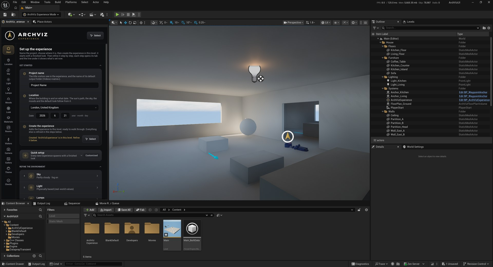
Finished look on day one
Physically based sun, sky, weather and exposure the moment you create the experience.
Visitor modes
Explore, Orbit, Lighting, Materials, Floor plan, Camera and Gallery, in one dock.
Step-by-step setup
Tabs follow the order you build a scene. The Start tab shows what's set and what's next.
Checks before you ship
The Checks tab finds what would break the visit and fixes most problems in one click.
Installation
The plugin comes ready to run: it includes the compiled code for Windows, so there's nothing to build and no extra tools to install. It works in Blueprint-only projects as well as C++ projects.
From Fab
- Install to the engine. In the Epic Games Launcher, open Library, find ArchViz Experience under Fab and choose Install to Engine for Unreal Engine 5.8.
- Enable it in your project. Open the project, go to Edit › Plugins, search for ArchViz, tick ArchViz Experience and restart the editor when asked.
From a download (zip)
- Unzip into the engine. Put the ArchVizExperience folder in your engine's Engine/Plugins/Marketplace folder, for example C:/Program Files/Epic Games/UE_5.8/Engine/Plugins/Marketplace (create the Marketplace folder if it isn't there).
- Enable it in your project. Edit › Plugins, search for ArchViz, tick ArchViz Experience and restart the editor.
Installed in the engine, the plugin is available to every 5.8 project on that PC, and you update it in one place.
Requirements
- Unreal Engine 5.8.
- Windows (64-bit).
- The plugin enables what it needs: Sun Position, Enhanced Input and Movie Render Queue.
- It sets custom depth with stencil (r.CustomDepth 3) itself, for the surface outline in Materials mode. No project settings need editing.
The plugin's assets appear in the Content Browser as ArchViz Experience Content (turn on Show Plugin Content in the Content Browser settings if you don't see it). Things the tool makes for your project, such as baked floor plans, imported videos and saved Lumen presets, are saved in your project under Content/ArchVizExperience, never inside the plugin, so updating the plugin never touches your work.
Quick start: a walkable level in a few minutes
- Open the mode. In the mode selector at the top left of the level editor, choose ArchViz Experience (shortcut Shift + 5).
- Name the project. On the Start tab, type the name visitors will see.
- Choose the location. Pick the nearest major city and the date. The sun path, sky and moods follow from it.
- Choose the controls. Desktop (mouse and keyboard), Touch (touchscreen or tablet) or Gamepad. See Desktop, touch and gamepad.
- Create the experience. Press Create experience in level. The Experience is placed at the world origin with a finished default look, and the level is set to use the ArchViz game mode.
- Press Play. Walk with WASD, hold the right mouse button to look around, and open the modes from the dock.
Then refine it tab by tab: add waypoints and floor plans, mark surfaces visitors can restyle, link interior lights, and run Checks before you package.
The ArchViz Experience mode
The mode panel has three parts:
- Header: the North Point lockup and Select, which selects the Experience actor in the level and Outliner. Before an Experience exists, Set up takes you to the Start tab.
- Rail: the tabs, in setup order. Environment first (Location to Rooms), then the visitor experience (Visitors to Theme), then Checks. A badge on Checks shows how many problems the level has.
- Tab: every tab opens with a title and a one-line purpose, followed by sections you can fold away. Folded sections stay folded between sessions.
The Experience actor
All settings live on one actor, BP_ArchVizExperience. It owns the sun, sky light, atmosphere, height fog, clouds and post-process overrides, so a level needs nothing else to be lit. It always sits at the world origin (0, 0, 0) and can't be dragged away; in the viewport it shows only its North Point billboard, 50 cm above the floor.
Every change made in the panel can be undone with Ctrl + Z, and the same values are also in the actor's Details panel if you prefer it.
Keep a single Experience in the persistent level. Extra ones are ignored (Checks will flag them). Separate sun, sky light, fog or atmosphere actors light the level twice; Checks offers to delete them.
Start
Name the project, choose where it is, then create the experience. Then refine it step by step.
Learn with the demo
The plugin comes with a demo level: a finished three-storey home with every feature set up (finishes, packages, furniture options, moods, floor plans, waypoints, gallery). Open demo level on the Start tab opens it (it asks to save your level first). Explore it, press Play to walk through it as a visitor, and practise freely: nothing you change there needs saving. You can also find it in the Content Browser under Plugins › ArchViz Experience › Demo › ArchVizDemo (turn on Show Plugin Content in the Content Browser settings).
Get started
- Project name: the title visitors see in the top-left corner, and the name of the default output folder for photos and videos (Videos/<name>).
- Location: the nearest major city fills in latitude, longitude, time zone and daylight saving; the date sets the sun's path. Fine-tune both on the Location tab.
- Controls: how visitors will use it, Desktop, Touch or Gamepad. Desktop is chosen by default; change it any time on the Visitors tab.
- Create experience in level: places the Experience at the world origin with your name, location, date and controls on top of the default look. The button stays dimmed until the project is named and a city chosen.
Quick setup
Every new Experience starts with the default look: physically based lighting with natural exposure, a partly cloudy afternoon (15:30 on 21 June), light haze and a gentle filmic finish. The badge reads Default look or Customised. Restore default look puts lighting, sky, exposure, colour and the start-up time back, and keeps your location, lights, materials, rooms and theme.
Refine, visitor experience, before you package
The rest of the tab is a checklist of the other tabs. Each row opens its tab, and the line under it shows what's set now, for example Partly cloudy · fog on or 2 waypoint(s) · 1 floor plan(s) · 0 orbit point(s).
Other tabs are dimmed and show a preview with a notice until you create the Experience.
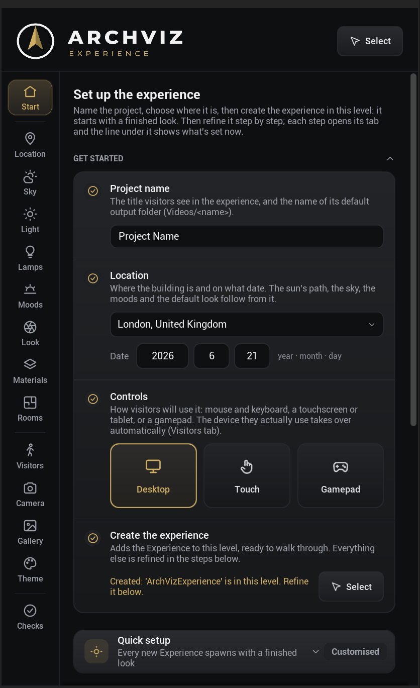
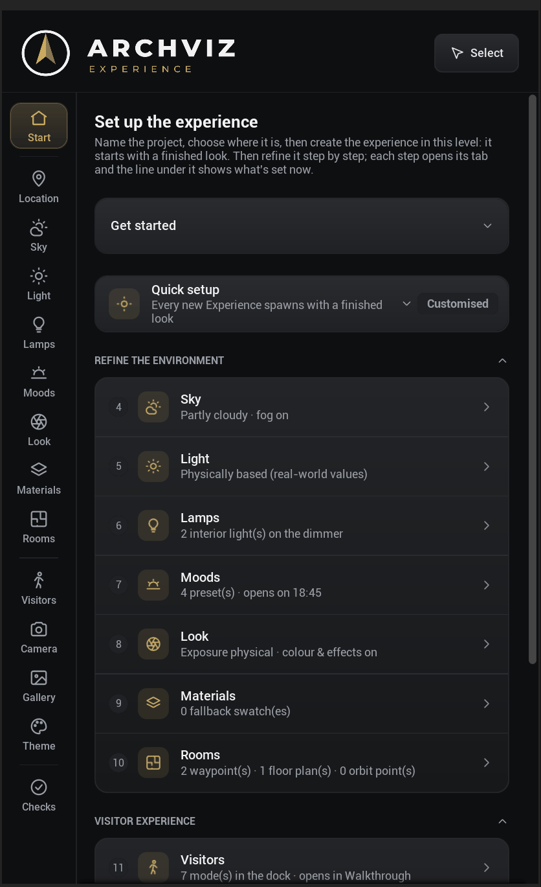
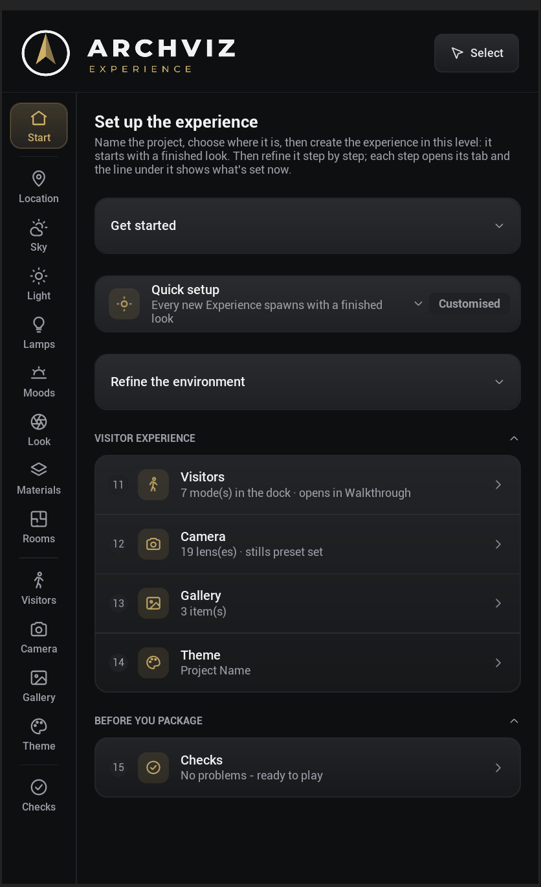
Location
Where the building is and on what date. The sun's path, sunrise and sunset follow from this.
Site
- City: fills in the site below. Editing a value by hand turns it into a Custom location.
- Latitude (north +, south −) and Longitude (east +, west −) in degrees.
- Time zone (UTC offset), Daylight saving time and its rule (for example Europe: last Sunday of March to last Sunday of October).
- Date: the day the sun path is computed for.
- North offset: turns true north relative to the level, so the sun comes from the right side of a model that isn't aligned to the world axes.
A summary underneath shows the sun at the start-up time, for example “18:45, 21 Jun 2026: 21° above the horizon, in the WNW. Sunrise 04:43 · sunset 21:22 (daylight saving).”
Level overrides (sub-levels)
Give a streamed sub-level its own location, date, time, sky or look, for example a separate show flat in another city. Make the sub-level current in the Levels window, then press Add override to the current level. While that sub-level is visible in the visit, the Experience uses the override's ticked values (time and weather blend in) and switches back when it unloads. The highest priority wins. Only one Experience is needed, in the persistent level.
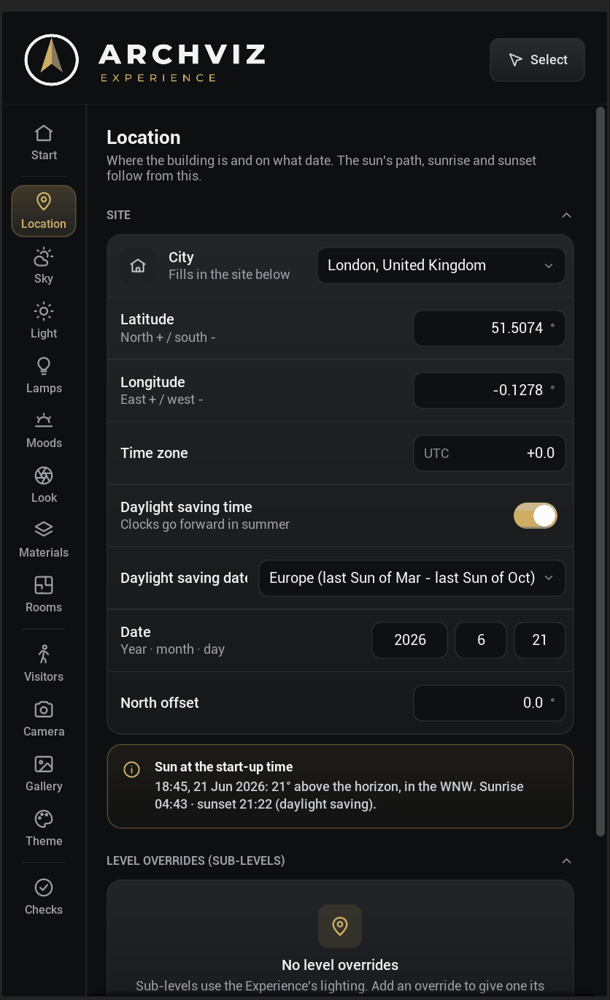
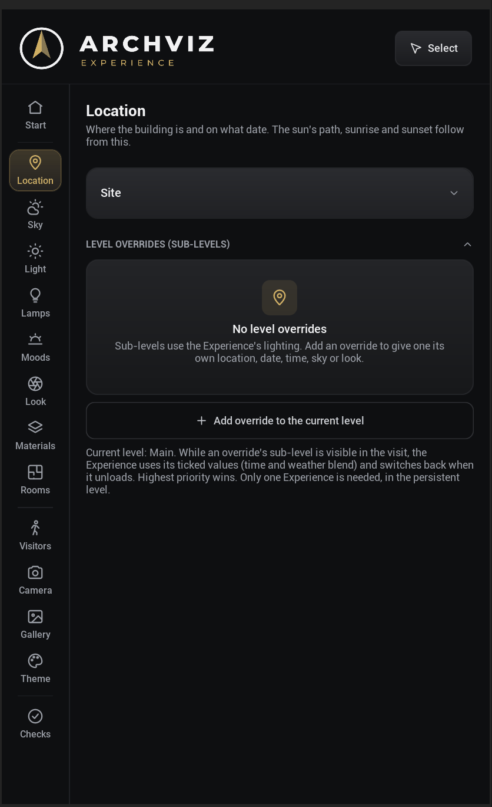
Sky
What's overhead: the physical sky with weather presets, or a photographed HDRI sky, plus the height fog and the stars at night.
Sky source
- Physical sky: atmosphere and volumetric clouds. The sun follows the location, date and time, and the weather presets apply.
- HDRI: a photographed sky from a Texture Cube (import an .hdr or .exr panorama). Set its Rotation and Brightness. With Sun from the HDRI the tool finds the sun in the image and matches its direction, intensity, colour and shadow softness; Fog from the HDRI takes the haze colour from its horizon. If the HDRI has no clear sun (overcast), the light is soft and even, with a faint key from the brightest part of the sky; Light level sets how strong. Press Re-read HDRI after re-importing the texture.
While the HDRI is the sky, weather presets and clouds are off, and location, date and time of day don't move the sun.
Weather
Three presets, all photoreal volumetric clouds:
- Clear: deep blue sky with a few small distant clouds, crisp sun shadows.
- Partly cloudy: scattered cumulus with bright tops; cloud shadows drift across the site.
- Overcast: a continuous soft grey deck, no hard shadows, even light and a hazier horizon.
The selected tile is the weather when the visit starts; visitors can switch it in the Lighting drawer. Change time sets how long a weather change takes, and Cloud quality trades finer clouds for GPU time.
Rain and snow
Rain or snow falls on top of whichever sky is chosen: Precipitation (None, Rain or Snow) and Precipitation intensity (0.2 drizzle or a few flakes, 0.6 steady, 1 a downpour or heavy snow) in the Experience's Weather settings. Rain and snow bring their own lower, darker cloud deck, so they also work over a Clear sky; the air thickens (snow most) and the sun dims. They fade in and out over the same Change time.
- Never indoors. The Experience keeps a small top-down map of the roofs around the visitor, so drops and flakes stop at the roof but still fall outside the windows.
- Wet ground, puddles, snow cover. Surfaces using the weather material (see Weather on materials) get wet in about 15 seconds of steady rain, puddles spread over about 40 seconds, and everything dries over a couple of minutes after it stops. Snow settles over about 45 seconds, first in patches that grow together, and melts slowly, quickly in rain. Places under a roof stay dry; under trees and other high cover the snow thins out gradually with a soft edge, and it leaves a bare gap along walls and around trunks and posts. Leaves keep their snow (the foliage material turns the gaps off with the weather function's ContactGaps input).
- Ripples and splashes. Each drop sends a train of concentric rings across the puddles, overlapping like a real puddle in the rain, faint drop marks show on wet surfaces, and small splashes jump where drops land on open ground, puddles and wall tops.
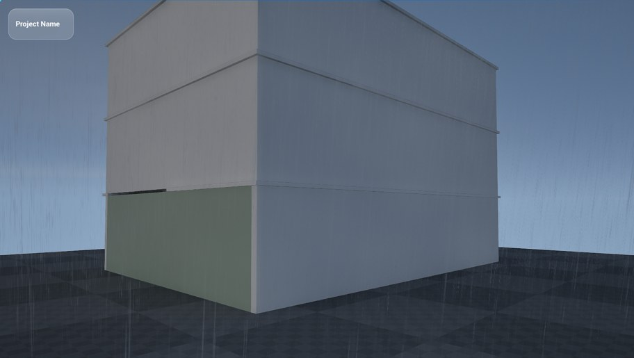
Set them in the Rain & snow section: Dry, Rain or Snow, and Intensity. The viewport previews the cloud deck and wet or snowy surfaces straight away; the falling rain and snow show in Play. Visitors switch them in the Lighting drawer.
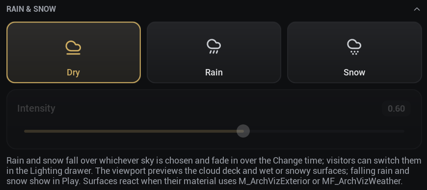
Trees and seasons
Trees and plants follow the site's date and hemisphere (Start tab: city and date). Give their leaves M_ArchViz_Foliage (cut-out leaves, light through them, wet in rain, snow settling on top) and set, per tree:
- BloomColor and BloomStrength: an optional blossom tint in late spring (0 = off, as on the demo trees).
- AutumnColor and AutumnStrength: leaves turn in autumn (the demo jacaranda turns gold in October in the north, April in the south).
- WinterLeafLoss: how many leaves fall in winter (0 = evergreen, like a fir).
Clusters change at different times, so a tree turns gradually. Near the equator autumn and winter fade out. Bark can use the weather material (M_ArchVizExterior). The demo has a jacaranda and three firs around the house.
Ambient sound
The visit has a soundscape that follows the world: birds by day, crickets from dusk (evening is where the two overlap), wind that rises under cloud, in rain and most in snow, and rain when it rains. Rain quiets the birds and stops the crickets. Inside (a roof overhead) the outside drops to Indoor level behind a muffling filter and the rain becomes rain on the windows. A room can have its own sound (see Room sounds).
Settings are in the Experience's Details panel under Sound: the on/off switch, Volume, Indoor level, Fade time, and (advanced) the five recordings, which you can swap for your own looping sounds. The built-in ones are CC0 recordings (see Credits). ArchViz.Sound mutes, unmutes or sets the volume during Play and logs each layer.
Fog
Apply fog lets the Experience set the height fog: visibility and Volumetric fog (light shafts, costs performance).
Night sky
After sunset the physical sky fills with real stars and the Milky Way, from NASA's Deep Star Maps (a photographic all-sky map built from the Gaia, Hipparcos and Tycho star catalogues). The sky is turned to where the stars really are for the site, date and time on the Location tab, so the Pole Star sits over north and the Milky Way rises and sets through the night. The stars fade in through twilight (the brightest from the sun about 4° below the horizon, most by 10°, fully dark at 12°, so a midsummer night in northern Europe keeps a light sky), thin under partly cloudy skies and mostly vanish when it's overcast. A warm glow from nearby towns sits on the horizon and fades upwards; under cloud it lights the clouds from below, so an overcast night is brighter, not darker.
- Stars and Milky Way: turn the night sky on or off.
- Star brightness: 1× looks like a dark site to eyes used to the night. Raise it for a more dramatic, long-exposure sky; above about 4× auto exposure balances most of the gain away.
- Light pollution (horizon glow): how bright the town glow is, from Dark site (only faint natural airglow) through Rural and Suburban (the default) to City centre, where the glow climbs high and washes out the fainter stars. It works with the stars switched off too.
The stars belong to the physical sky; an HDRI sky shows its own. If the level opens at night, the editor viewport shows them too.
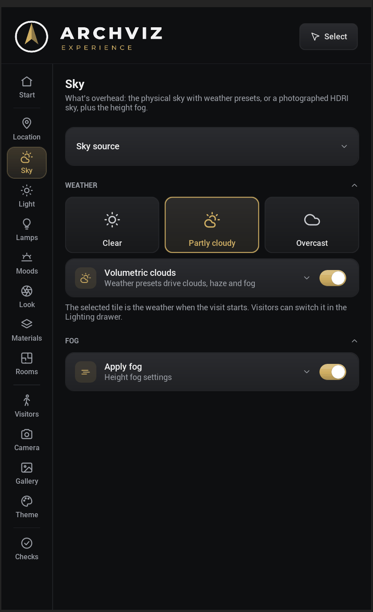
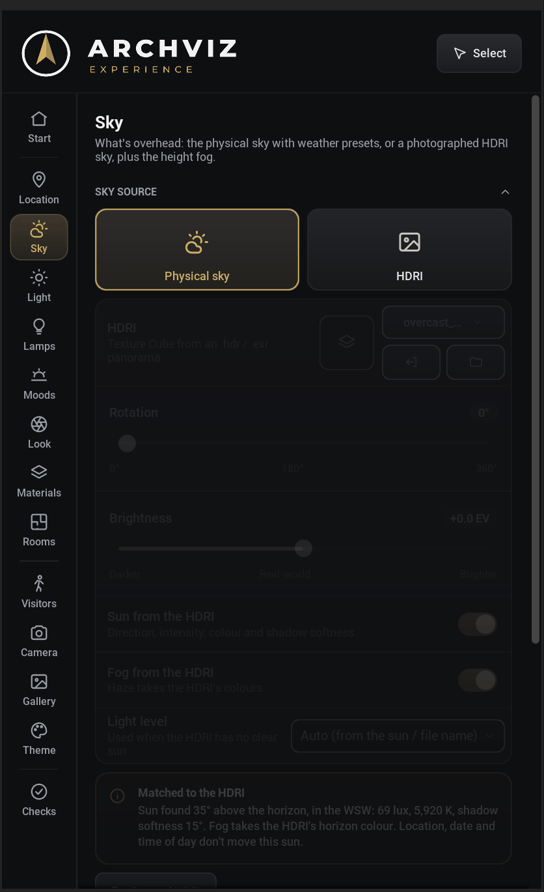
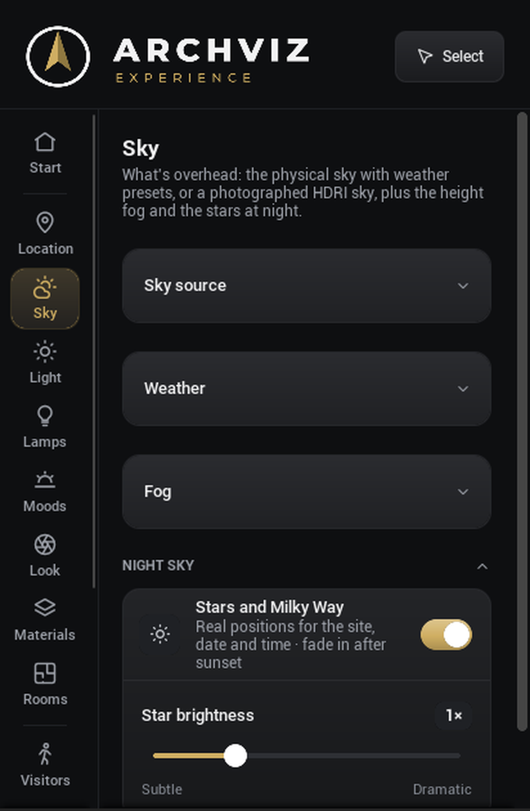
Light
How strong the sun and sky are. Physically based lighting sets real-world values, and the exposure, for you.
Physically based lighting
On by default. It uses real-world values for the sun, sky, lamps and exposure, so interiors and exteriors balance like a real camera would see them.
- Convert level lights: point, spot and rect lights in the level are set to real lumens, including ones you add later.
- Exposure compensation: from Darker through True to life to Brighter, in stops.
- Sun illuminance: above the atmosphere (about 100,000 lux reaches the ground at noon).
- Lamp outputs: Bulb / pendant (point lights, 800 lm = 60 W LED), Downlight / spot (600 lm), Panel / strip (rect lights, 3,000 lm for a 60 × 60 cm panel).
- Eye adaptation: Darkest and Brightest adaptation (EV100 −2 = moonlit exterior, 16 = noon sun on bright surfaces), and how fast eyes adapt to brightness (stepping outside) and darkness (stepping inside, slower, like real eyes).
- Local exposure: keeps detail in bright windows and dark corners.
Sun & sky
With physically based lighting off, set the sun yourself: intensity in lux, colour temperature, shadow softness, and Sun at the horizon (full elevation and off elevation, so the sun fades in and out at sunrise and sunset). While an HDRI is the sky, the sun follows the HDRI instead.
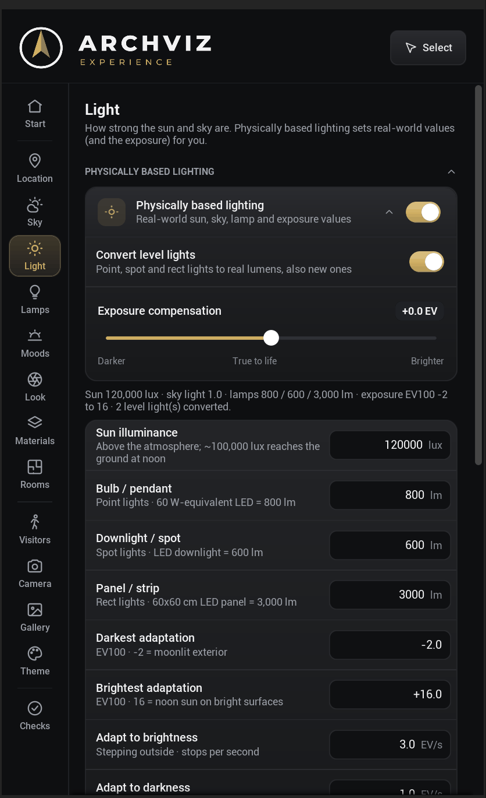
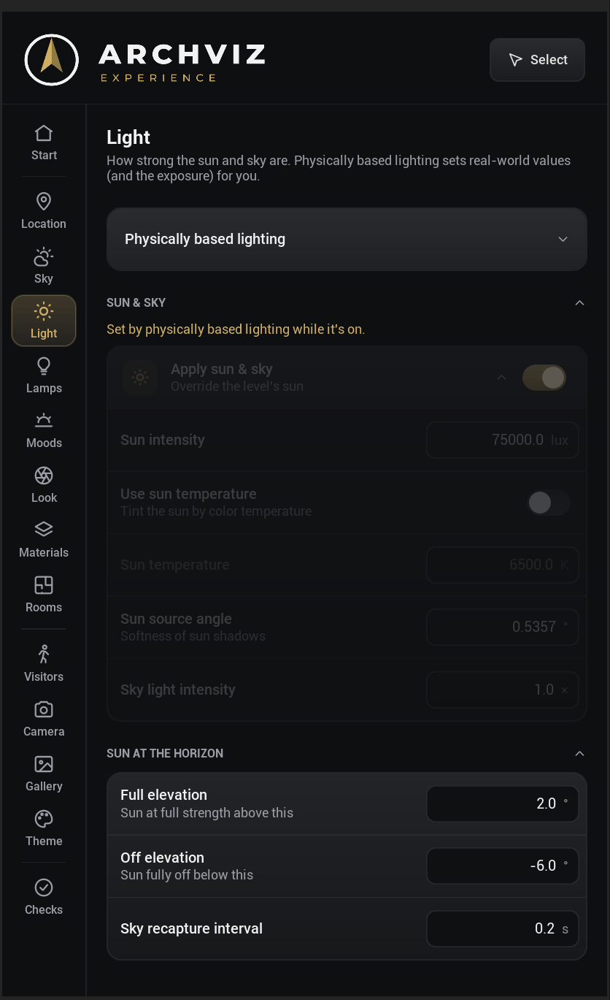
Lamps
The interior lights visitors can dim and warm up, how they're set when the visit starts, and the outdoor lights that come on at dusk.
Interior lights
Select light actors in the level and press Add selected lights, or give lights the Auto-include tag (they're added when the visit starts). Click a row to select the light and move the viewport to it.
The dimmer can only change lights set to Movable (or Stationary). Checks flags Static ones and makes them Movable in one click.
When the visit starts
Interior light level (0 to 100%) and Interior warmth (from warm to cool, in kelvin) are the values the visit opens with. Visitors change both in the Lighting drawer.
Outdoor lights
Street lamps, garden and facade lights switch on by themselves at dusk and off at dawn, following the sun like a real photocell. Select the lamp actors (each with a light component) and press Make selected outdoor lights; it gives them the Outdoor light tag (ArchVizExterior). Their placed brightness is "fully on" (a street lantern is 2,000 to 5,000 lumens).
- Switch on at dusk: off leaves the lights as placed, day and night.
- Switch at sun height: 0 is sunset; a negative value switches later, in twilight. The lights fade over a degree either side.
- Outdoor warmth: the colour of the lights and their bulbs (LED street lights are 3,000 to 4,000 K).
To make the lamp's glass glow with them, use MI_LampBulb_Street (M_ArchViz_LampBulb with Exterior Light on) on it. Put the light inside the lantern and keep the glass as a separate mesh with Cast Shadow off, so the glass doesn't block its own light while the post and frame still cast shadows. The demo has two street lamps beside the house.
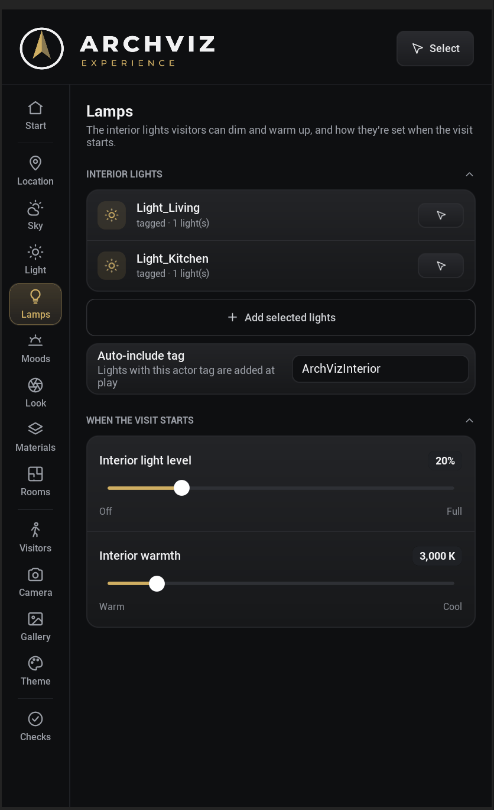
Moods
Lighting presets visitors can tap (morning, midday, dusk, night...) and the lighting the visit opens with.
Lighting presets
Each mood is an ArchViz Lighting Preset data asset: a name, an icon, a time of day, and the interior light level and warmth. Four come with the plugin: Morning, Midday, Dusk and Night. Press Add for another, and use the tile menu to open the preset, reorder it or remove it.
Click a tile to choose its thumbnail: one of the line icons in the interface's style, or your own image (a white-on-transparent icon is drawn like the UI icons; a picture fills the tile, 16:10 looks best). Add mood icons gives every mood without a thumbnail the icon matching its name.
Without presets, the Lighting drawer shows its built-in defaults.
When the visit starts
Choose a Default preset, or set the Time of day the visit opens at.
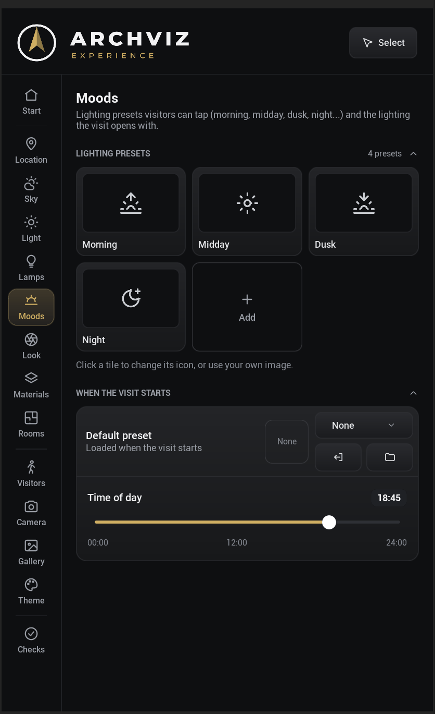
Look
The final image: brightness and eye adaptation, colour and lens effects, Lumen ambient occlusion and quality, and any console variables.
Exposure
While physically based lighting is on, it sets the exposure; use its exposure compensation on the Light tab. Otherwise choose automatic exposure (compensation, darkest and brightest adaptation, adaptation speeds) or a manual physical camera (ISO, shutter speed, aperture). Turn Apply exposure off to let the level's post-process volume decide.
Colour & effects
Folded by default. White balance and tint, saturation, contrast, bloom, lens flare, vignette, chromatic aberration, film grain and the filmic tone curve (slope, toe, shoulder, black clip). Turn Apply post off to let the level's post-process volume decide.
Lumen · ambient occlusion & bounce light
Three built-in presets: Interactive (real-time default), High quality (twice the gather, glass reflections) and Stills (maximum, for renders). Under them the full Lumen settings are grouped as:
- Ray tracing: hardware ray tracing and hit lighting (best reflections).
- Global illumination: bounce-light quality, scene detail, reach (too short = light leaks into big rooms) and noise.
- Ambient occlusion & sky leaking: AO strength (default 20%), contact shadows, sky light leaking (not physical: 0 = real) and bounce colour boost (1 = physical).
- Reflections and Translucency & glass.
Type a name and press Save current as preset to keep your own (saved in your project under Content/ArchVizExperience/Presets/Lumen; the same name updates it).
Console variables
Add any console variable with a value; matching names are suggested as you type. They're set when the visit starts. Load from file… reads name=value lines from an .ini, .txt or .cfg file; Save to file… writes the list so you can reuse it in other projects.
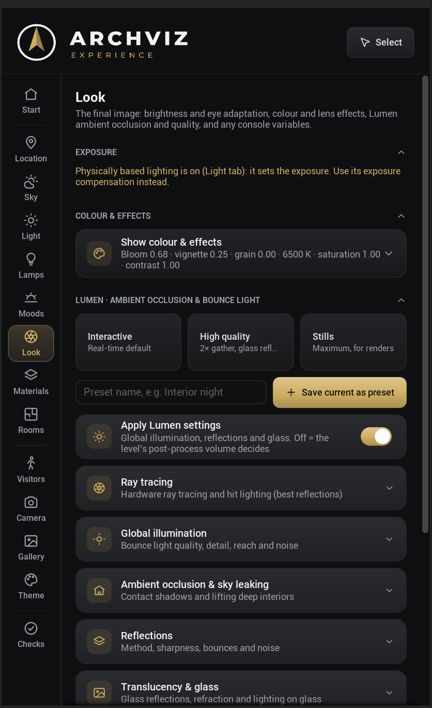
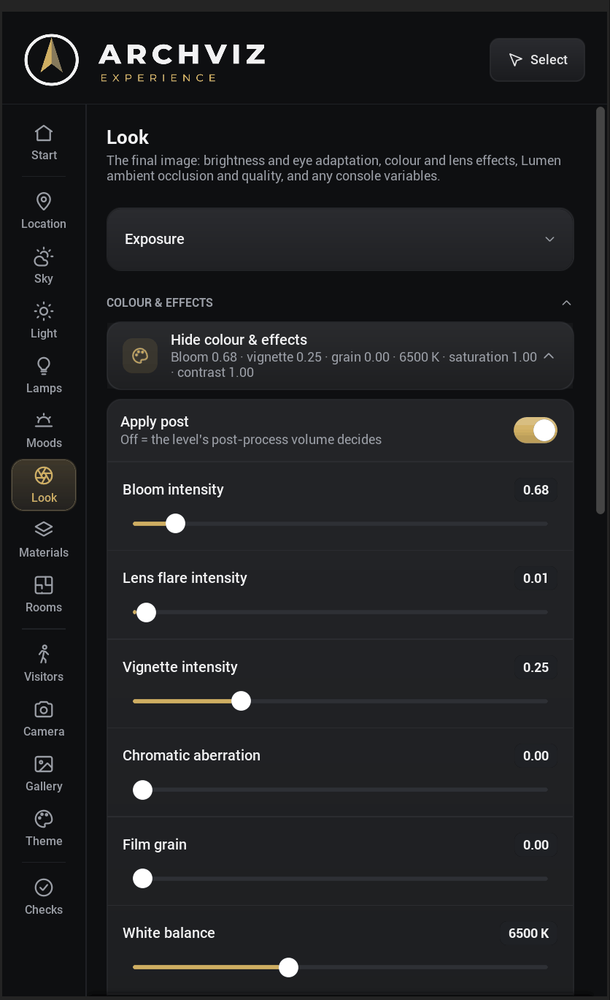
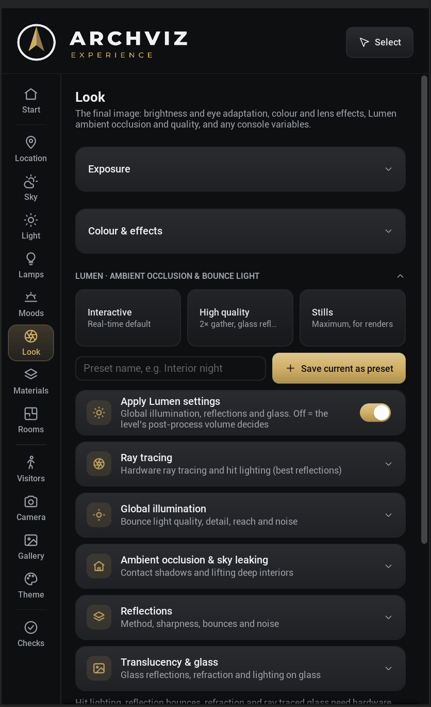
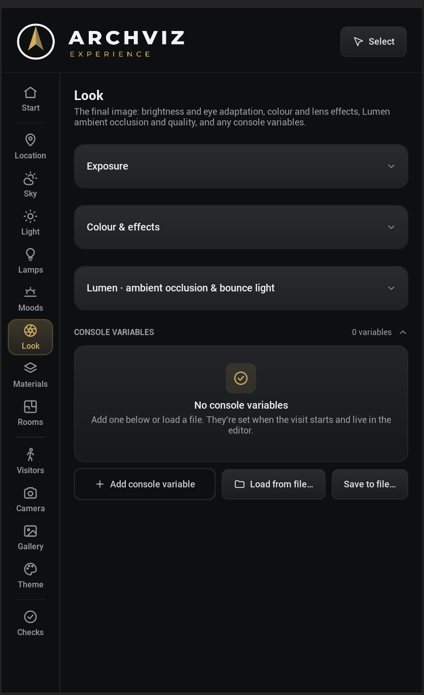
Materials
Which surfaces visitors can restyle, and the finishes (swatches) they can pick from.
Surfaces in this level
Select the actors visitors may restyle in the viewport, such as a floor, a feature wall or a kitchen island, and press Make selected customisable. Each gets a customisable surface named for visitors from the actor (SM_Kitchen_Island reads “Kitchen Island”). An actor with several materials gets one surface per material, for example “Kitchen Unit · Worktop” and “Kitchen Unit · Doors”, so visitors restyle each part on its own. Materials that already have a surface are skipped, and Ctrl+Z undoes the lot. Rename a surface in the Details panel (Surface Name).
Each row shows the surface's swatches; Select moves the viewport to it. Press Edit to set the surface up in place:
- Name: what visitors see in the Materials drawer.
- Parts (actors with several materials): tick which materials this surface restyles, for example the doors and the plinth together.
- Finishes visitors can pick: Add selected from Content Browser takes swatches, or materials and material instances (made into swatches first). Reorder or remove them with the arrows and cross. A surface with none of its own uses the fallback list; Copy fallback here gives it its own copy to trim.
- Preview (play button): shows the finish on the surface in the viewport, exactly as the visit will. Press it again, close the row or leave the tab to stop. A preview is never saved, and it ends on its own when you save or press Play.
- Start (pin button): the finish the visit starts with. Press it again to start with the model's own material.
Finishes from your materials
Select materials or material instances in the Content Browser (Ctrl+click for several) and press Create swatches from selected materials. Each becomes a swatch named from the material (MI_Oak_Floor_01 reads “Oak Floor”) with a rendered preview tile, saved in /Game/ArchVizExperience/Swatches. A material that already has a swatch reuses it. If surfaces are selected in the viewport the swatches go to those surfaces; otherwise they go to the fallback list.
Fallback swatches
Used by surfaces with no swatches of their own. A swatch is an ArchViz Swatch data asset: a material (or material instance) plus a name and optional thumbnail. Twelve come with the plugin, from oak and walnut to Calacatta marble and brushed steel; Oak and Walnut use real CC0 wood textures from Poly Haven.
For your own textured finishes, make an instance of M_ArchViz_SurfaceTextured (in the plugin's Materials/Surfaces folder) and set its colour, ARM (AO / roughness / metal) and normal maps, plus TileSize: the real size of the texture in centimetres. It projects in world space, so it tiles at the right scale on any mesh, whatever its UVs. Then make swatches from it with Create swatches from selected materials.
Swatch thumbnails
Generate swatch thumbnails renders a preview tile for every swatch from its material and saves it next to the swatch. Swatches with your own thumbnail are left alone. Run it again after changing a swatch.
Décor styles (finish packages)
A style is a named set of finishes for every customisable surface, plus the chosen option in each Options group (and each Variant Manager set, if you use them). Set the level up the way you want it, type a name and press Save current look as style; a thumbnail is captured from the viewport. Each style in the list has Apply, Update (save the current look into it) and a name, description and picture you can edit.
Visitors see the styles twice: in the front end's menu (“Choose a style”, see Start-up) and as Packages at the top of the Materials drawer during the visit, where one tap restyles every room. A site's styles come from its entry on the Start-up tab; without one, every style saved from the level is offered.
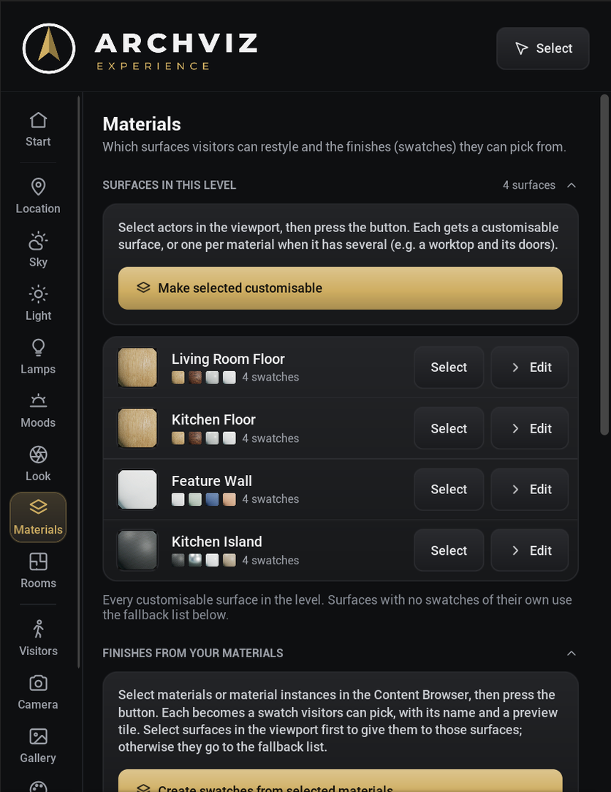
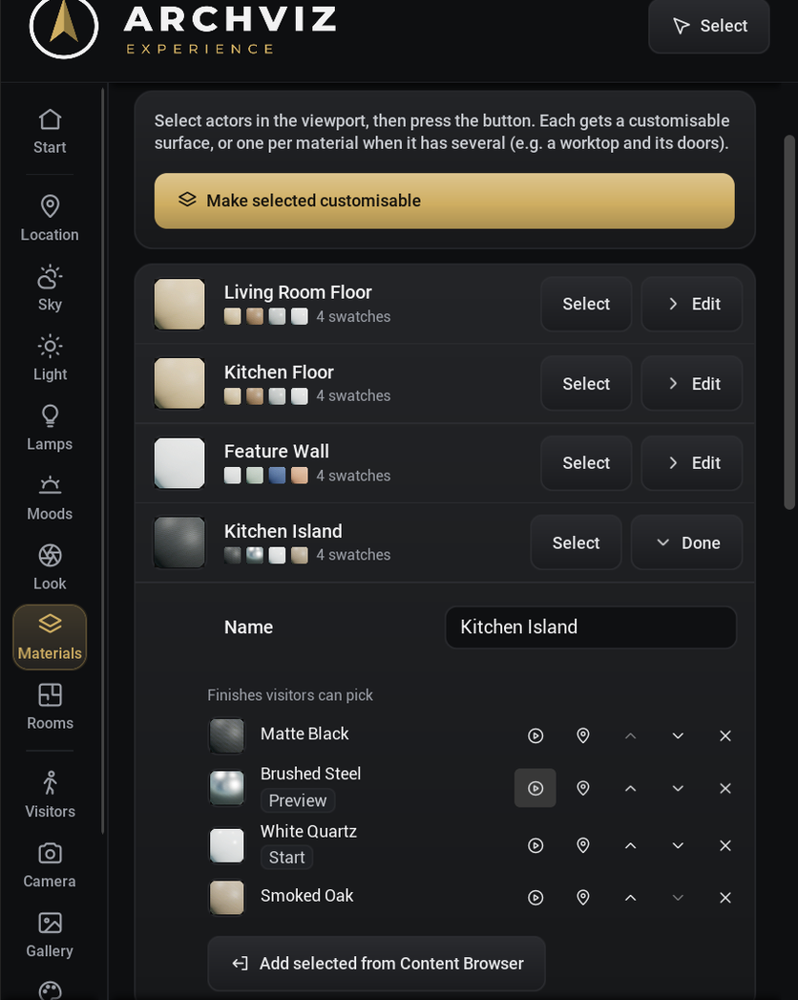
Options (layouts & furniture)
Alternatives visitors switch between in the Materials drawer, such as Furnished / Unfurnished, two kitchen layouts or a study that can be a bedroom. Options are grouped: each group (e.g. Furniture) has two or more options, and each option is simply a set of actors already placed in the level. Choosing an option shows its actors (with collision) and hides the actors of the group's other options. An option can be empty: choosing it just hides the others, which is how Unfurnished works.
- Place every alternative in the level, e.g. the furniture you want to be removable.
- Select the actors of the first option in the viewport and press Add group. It creates a group with those actors as the first option and an empty second option. Name the group and both options.
- To fill another option, select its actors and press its Use selected actors. Add option adds one more option from the selection.
- Tick the option the visit should start with (the round button on its left).
Each option shows how many actors it has (or “empty”), with Preview to show that option in the editor viewport and Select to select its actors. A preview only changes what you see while editing; nothing is saved, and Show all brings every actor back. The × buttons remove an option or a whole group (the actors stay in the level).
Décor styles remember the option chosen in each group when you save them: the visitor's choice when you save during Play, otherwise the ticked options. Applying a style switches them back. Styles saved before you added options don't include them; press Update on the style to add them.
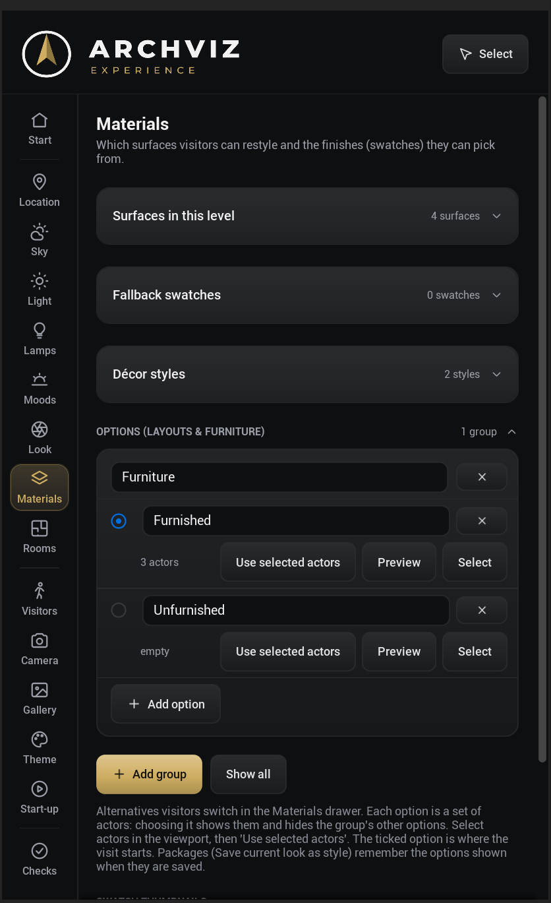
Weather on materials (puddles, snow)
Outdoor surfaces only react to rain and snow when their material includes the weather function. Two ways:
- Use the master material. Make a material instance of M_ArchVizExterior (ArchViz Experience › Weather) and set its base colour map, tint, roughness, metallic, normal map and UV scale. Its Weather switch is on by default; turn it off for surfaces that should never get wet (inside a covered porch, for example).
- Add it to your own material. Drop the MF_ArchVizWeather function between your material and its outputs: route Base Color, Roughness, Normal and Metallic into it and its outputs into the material. Nothing else is needed; it reads the weather from MPC_ArchVizWeather.
Puddles form only on flat, upward-facing surfaces (terraces, paths, flat roofs, wall tops), snow settles on anything facing up, and walls get a lighter wetting. The test pieces in the demo level (House › Exterior › WeatherTest) show all three.
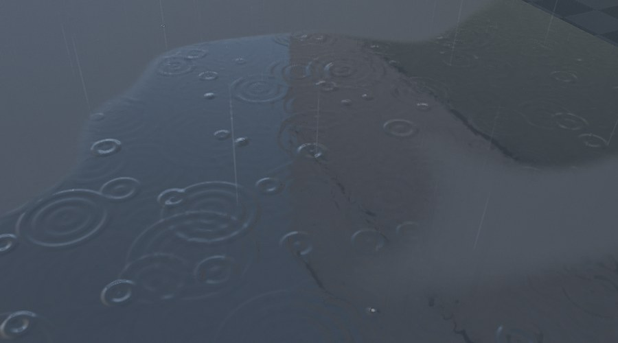
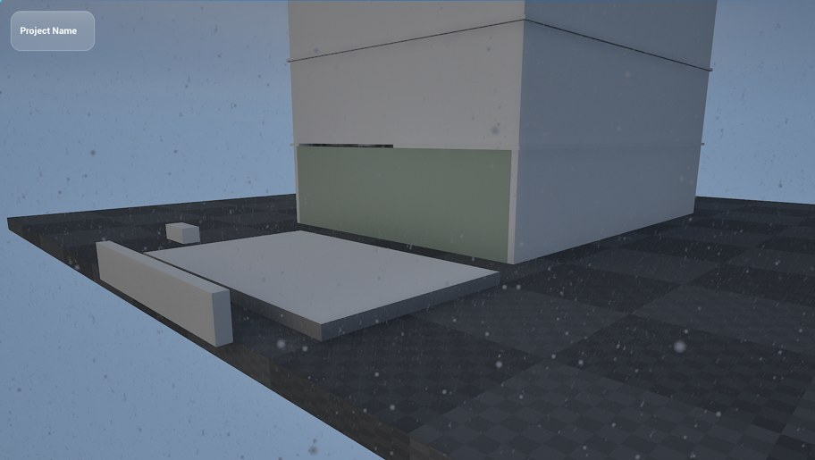
Wet surfaces are glossy, so any relief in their normal map shows clearly in the reflections. Leave Normal Map at its default (flat) for smooth paving, or give it the surface's real normal map.
Rooms
Places visitors can teleport to, the floor plans for each storey, where Orbit view circles the building, the dollhouse cut and info points.
Waypoints
Add waypoint places an anchor on the floor where the viewport is looking. Give each a Room Name (its label) and a unique Room Id, which links it to its marker on the floor plan. Visitors click the floating markers, or the room on the plan, to move there. In the level, each waypoint shows a blue pin icon a metre above the floor (editor only), and its arrow marks the landing spot on the floor. Keep that spot clear: a visitor who would land inside furniture or a wall is moved to the nearest free spot, and the Checks tab names anything standing on a landing spot.
Room sounds. A waypoint's Room Sound (a fire, a kitchen, a water feature; a looping sound) plays while the visitor is in that room, at Room Sound Volume, and fades out as they leave. Set both in the waypoint's Details panel.
Floor plans
One volume per storey. Add floor plan, then size the box around the storey with its bottom face on the floor and set its Floor Index. Bake plan draws a clean plan from the geometry inside the volume (walls, furniture, floor) and saves it as a texture in your project. Re-bake after changing the building or the plan colours on the Theme tab. You can also use your own plan image.
Room areas
Bake plan also measures each storey's inside floor area (walls excluded) and the area of each waypoint's room. Doorways count as walls; where rooms open into each other, the space is split halfway between their waypoints, and a space without a waypoint isn't counted in any room. Visitors see “Kitchen · 18.4 m²” on the room labels and “Ground Floor · 134 m² · Home 408 m²” at the top of the plan.
Under the floor plans: Units (Metric m² or Imperial sq ft), Show room areas and Show totals. To use the architect's figures, set Area Override on a waypoint or a floor-plan volume (Details panel); turn Show Area off on waypoints such as stairs and landings. Bake again after changing walls or moving waypoints.
Orbit points
Visitors press Orbit in the dock to fly out and circle the building. Without orbit points, Orbit frames the whole site. To choose the start view, frame the shot in the viewport and press Add orbit point (uses this view): the direction, distance and height of your view become its start view. Each point has its own distance and angle limits, pan radius, optional turntable and an optional Transition time (0 = the Orbit transition set on the Visitors tab). The highest Order is where Orbit starts; Preview moves the viewport to a point's start view.
Dollhouse (Orbit: Cut open)
In Orbit, visitors can cut a storey open and look down into its rooms like a dollhouse. Nothing to build: the cut comes from the floor-plan volumes. For the chosen storey everything above its box (upper floors, slabs, the roof) is hidden, plus its own ceilings: flat actors whose bottom lies in the top band of the box (Ceiling band, 80 cm by default). Actors tagged ArchVizHideInPlan count as that storey's ceiling too. Walls that start on the storey stay whole, and lights keep working.
Each storey in the Dollhouse section shows how many actors its cut hides, with:
- Preview cut: shows the storey cut open in the editor viewport and looks down into it, the way visitors will see it. It's only a preview (nothing is hidden or saved); End preview brings everything back.
- Ceiling band: widen it if a ceiling stays, narrow it if high cabinets or a range hood disappear.
- Always hide / Never hide: add the actors selected in the viewport to the storey's lists, for anything the automatic rule gets wrong (a dropped ceiling, a double-height wall, a pendant light you want to keep). The × clears both lists.
The cut works per actor: a building merged into one mesh can't be cut open. Turn the dollhouse on or off with Dollhouse on the Visitors tab.
Info points
Clickable “i” markers for specifications: a worktop, the flooring, a window, an appliance. Look at the spot in the viewport and press Add info point: it's placed on that surface and selected. Fill in the Details panel:
- Title: the card heading, also shown above the marker on hover.
- Body: the text (materials, sizes, finishes…). Long text scrolls.
- Pictures: one or more textures; visitors switch between them with arrows.
- Link Url and Link Label: an optional button that opens a web page (brochure, spec sheet) in the browser. Leave it empty on locked-down kiosks.
Markers show while exploring, get smaller with distance, hide behind walls and fade out beyond Hide Distance (18 m). Turn them all on or off with Info points on the Visitors tab.
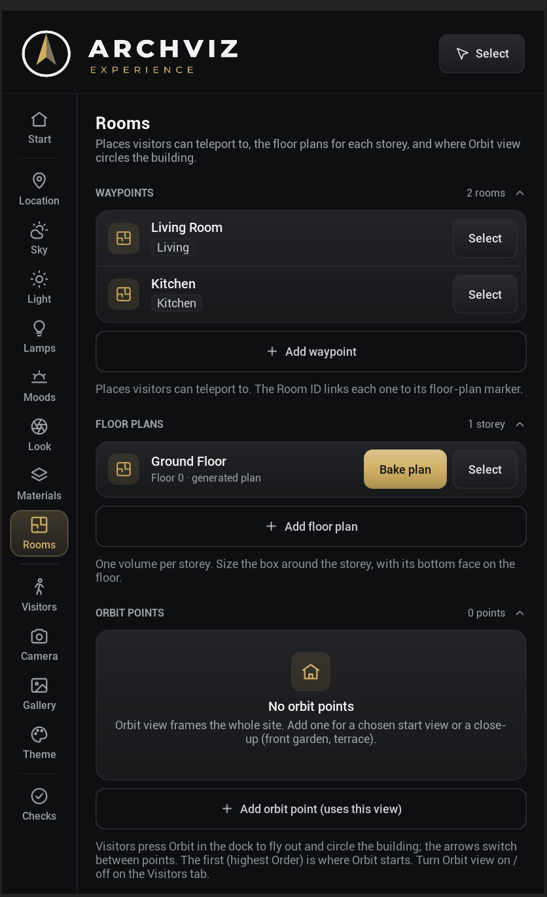
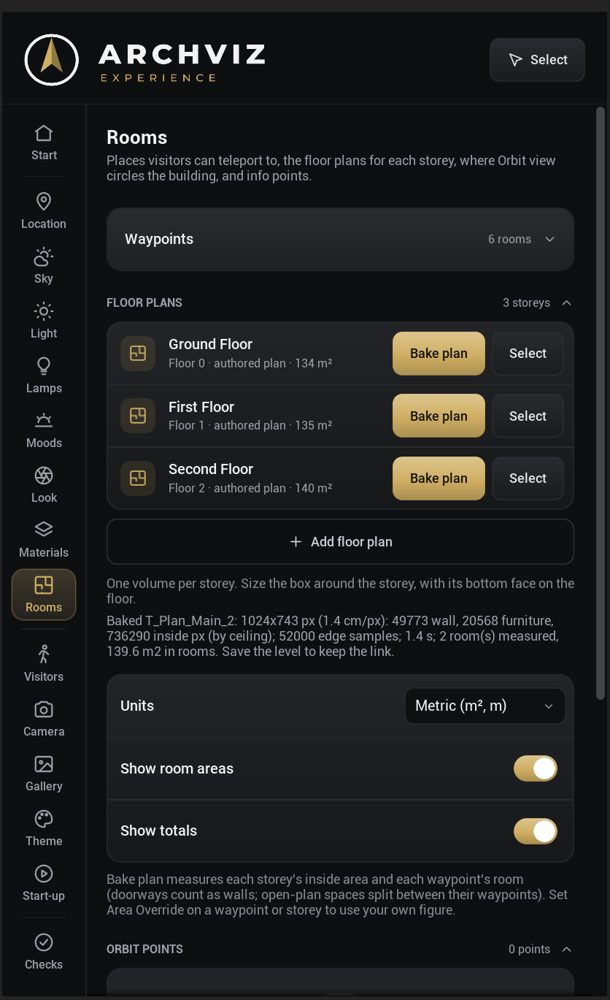
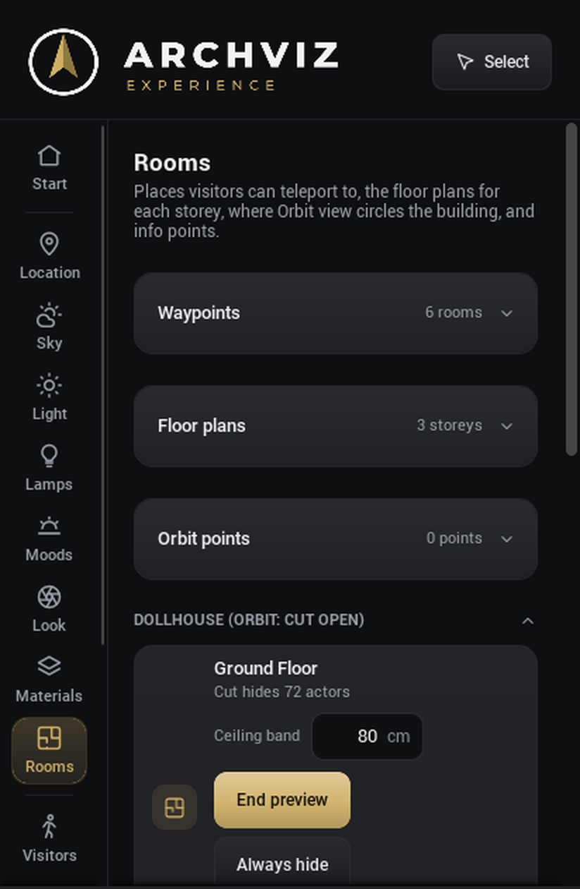
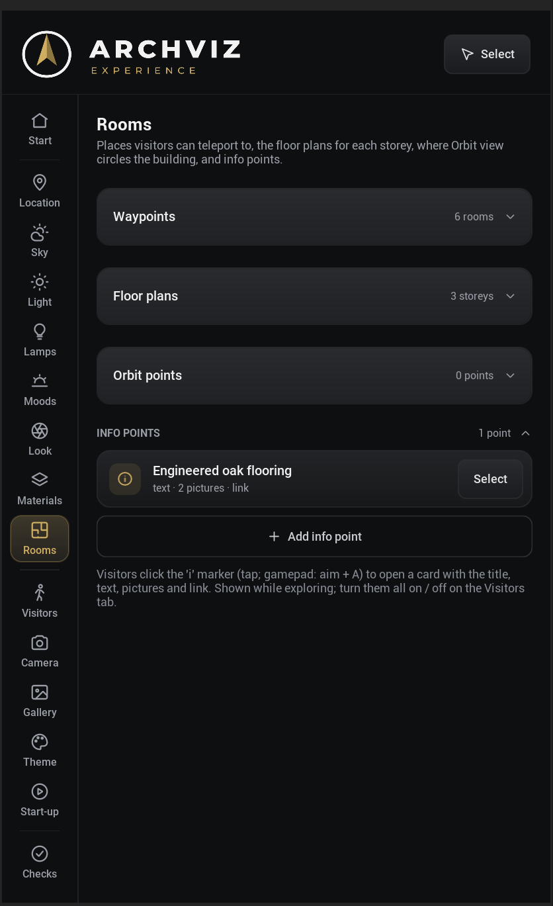
Devices
Things visitors switch on and off while they explore: a radio or speaker playing music, a ceiling fan. A round glass play icon floats above each one when visitors are near.
Add a device
Select the object in the viewport (your own radio, speaker or fan model works), then press Music player or Fan. It gets an ArchViz Device component and appears in the list below. Press Edit on its row to set it up:
- Name: shown next to the icon on hover (e.g. Radio).
- On at the start: plays from the moment the visit opens; otherwise visitors switch it on.
- Choose audio files...: MP3, WAV, OGG or FLAC files from your computer, imported into /Game/ArchVizExperience/Audio. Choose several for a playlist: they play in turn, in the order chosen (the first is Sound, the rest More tracks). The play and mute buttons next to it let you listen in the editor. Or pick any Sound Wave or Sound Cue in Sound.
- Volume; Loop starts the playlist again after the last track.
- Carries: how far it can be heard (silent beyond it).
- Walls muffle it: how much walls and doors soften it.
- Spinning parts: select the parts that turn (fan blades, film spools; separate actors placed on the device), then press Use selected. Set their Speed (turns per minute), axis and how long they take to spin up and coast down.
- Icon height above the object and the Show distance within which the icon appears. A device fixed to the ceiling (something solid right above it) shows its icon hanging underneath instead.
Ceiling fans
Place the fan body and its blades as two actors with their pivots on the axle (blades attached to the body), make the body a Fan and add the blades as its Spinning parts (axis Z). For the fan's lamp, put a point light just under the light kit and tag it ArchVizInterior so it follows the interior dimmer. To make the glass glow with it, use M_ArchViz_SurfaceTextured for the fan: turn on UseLightMask, set LightMaskMap (white where it glows) and GlowStrength; the glow follows the dimmer level and colour.
In the demo level a ceiling fan with a light hangs in the first-floor bedroom.
Projectors and TVs
Select the projector (or TV) and press Projector / TV. Then:
- Choose video file...: an MP4 (or MOV, AVI, WMV) from your computer, copied into the project (Content/Movies) so it is packaged.
- Set screen where the viewport looks: look at the clear wall in the viewport and press it; the picture goes there, facing out of the wall.
- Picture width (on the wall; the height follows the video's own shape, read when it opens), Turn picture (for footage filmed sideways: 90 degrees makes a landscape video a portrait picture) and Brightness in ANSI lumens, like a real projector (home projectors are 1,500 to 3,500).
- Its sound plays from the projector with the same distance and wall settings as music.
The projection is built like the real thing: the picture on the wall, a MegaLights spot light from the lens squared off to the picture, and a textured MegaLights rect light fed by the video, so the film's colours light the room around it. Turn on MegaLights on the Look tab (Lumen, Ray tracing) for the beam and screen light to use it; it needs hardware ray tracing.
In the demo level the projector stands on the ottoman in the first-floor living area and shows a film on the wall above the sofa; its reels turn while it plays.
Spatial sound
Music comes from the device itself: louder as visitors walk up to it, quieter with distance, softer and duller from other rooms and through walls, and panned left and right as they turn. Mono audio files place the sound most precisely. Add Audio Volumes with reverb to the level for room acoustics; devices send to them.
In the demo level the radio on the living-room sideboard plays a two-track jazz playlist.
Visitors
How the visit opens, which modes visitors get in the dock, and how walking and looking feel.
Start mode
The mode the visit opens in. Walkthrough (Explore) is the usual choice; a showroom kiosk might open on the Gallery.
Modes
Switch each dock button on or off: Lighting, Sun study (in the Lighting drawer) with Sun hours on room labels and the Sun path arc (Orbit), Materials, Floor plan, Camera, Gallery, Orbit view (exterior), Dollhouse (Orbit's Cut open row), Tape measure, Info points (the “i” markers) and the Quit button. Turn Quit off for kiosks where visitors shouldn't close the app.
Controls
Input mode (Desktop, Touch or Gamepad) and Switch to the device in use: with it on (the default), the controls, cursor and hints follow whatever the visitor actually uses, so a kiosk with a touchscreen and a controller just works. Then Walk speed in metres per second, Look sensitivity, and Orbit transition: how many seconds Orbit view takes to glide from one orbit point to the next (2.5 s by default). Orbit points can set their own. Show the controls on the first visit (on by default) opens the Controls card once, the first time someone visits on that computer.
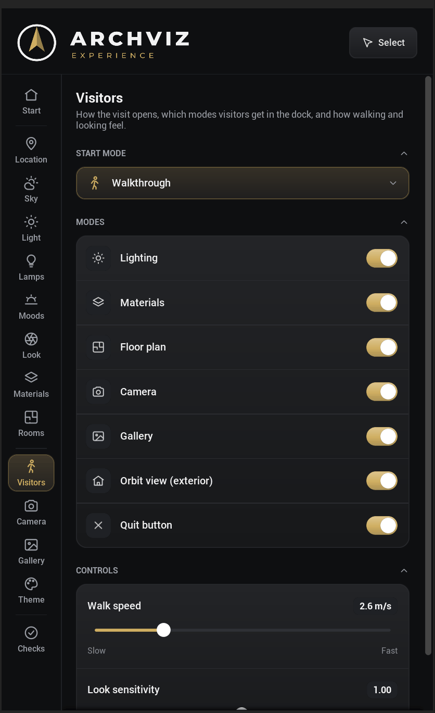
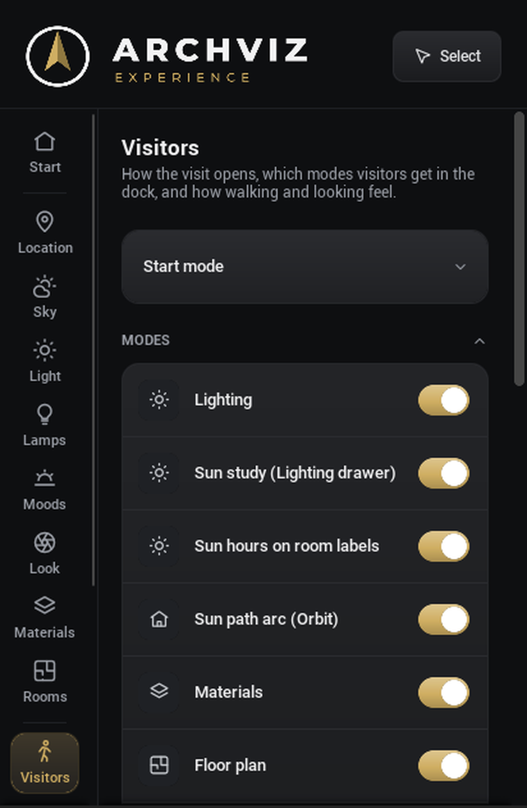
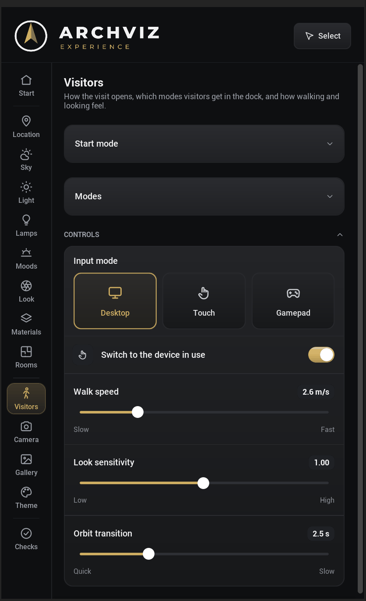
Camera
Camera mode for visitors: the lenses they can fit, how it starts, and where photos and videos are saved.
Lens presets
Grouped by brand (Apple, Canon, Sony, Nikon, Fujifilm); open a brand to see its lenses. The pin makes a lens the one visitors start with. Add lens adds any ArchViz Camera Preset asset (sensor, focal length, aperture range).
Framing & handling
The focal-length slider range (4 to 180 mm by default), the framing Camera mode opens with (16:9 and others), whether autofocus and the grid start on, the Handheld intensity (breathing, hand tremor and walking bob; 0 = a locked-off camera) and the starting Stabilisation (0 = raw handheld, 0.5 = lens stabilisation, 1 = gimbal), which visitors can change.
Video recording
The record button saves H.264 MP4 video. Set the resolution (1080p by default; the framing sets the shape), the frame rate (24 to 60, default 30) and the bitrate (0 = automatic: about 12 Mbps at 1080p30, 50 Mbps at 4K30).
Output folder
Files are saved, in this order of preference, to: the folder a visitor picked with the Folder button in Camera mode (remembered on that PC), the Experience's Output Folder, or Videos/<project name>. Open folder, Change…, Use default and Forget picked manage it.
Stills · Movie Render Queue
The camera button in Camera mode renders the current shot with Movie Render Queue using the stills preset. Create stills preset makes one with high-quality defaults (3840 × 2160 PNG, 8 anti-aliasing samples, warm-up frames); Edit stills preset opens it in the Movie Render Queue editor (format, resolution, anti-aliasing, path tracer, console variables). The resolution sets the short side; the framing sets the shape.
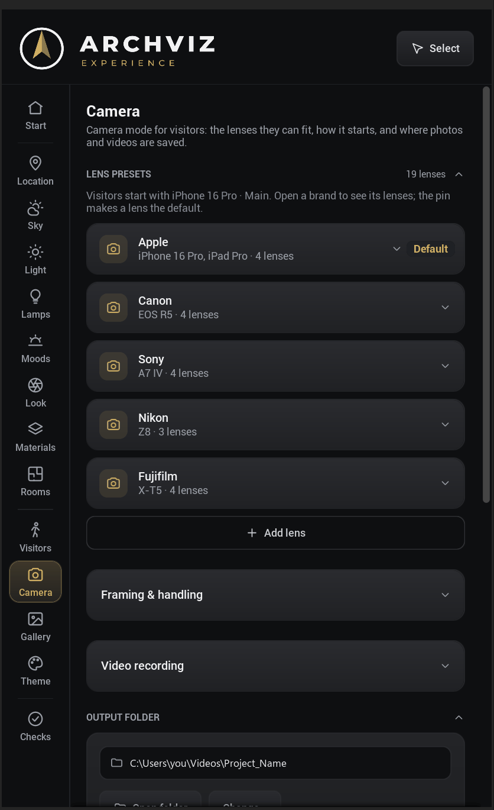
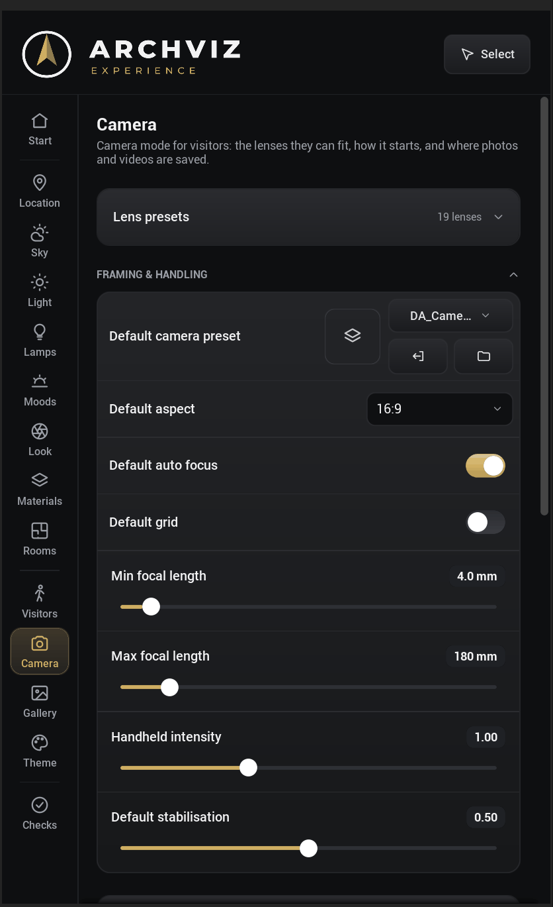
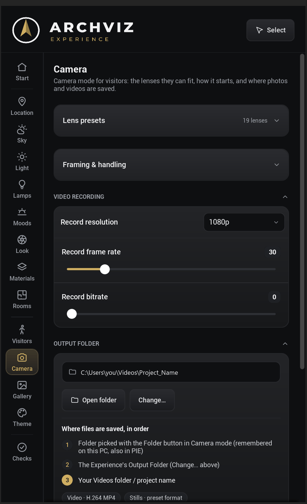
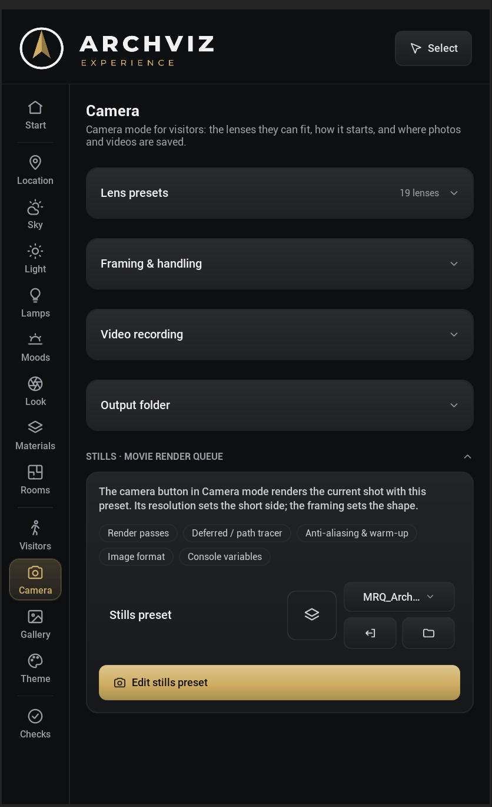
Gallery
Marketing images, rendered videos and Sequencer cinematics visitors can browse in Gallery mode.
Gallery items
Click an item to edit its type, title, caption and media; the arrows reorder it. Titles default to the asset names.
Add from Content Browser
- Add selected: adds the textures (images), media sources (MP4) and level sequences (cinematics) selected in the Content Browser, all in one go.
- Video file…: pick a rendered MP4 (or MOV, AVI, WMV) on disk. It's copied into Content/Movies so packaged builds include it, a media source is made for it, and it's added to the gallery.
Level sequences play live in the level with their own camera cuts, so they always show the current lighting and finishes.
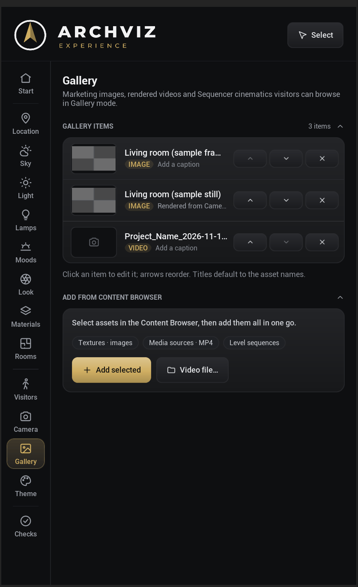
Theme
How the visitor interface looks: project name and logo, colours, glass, motion and floor-plan colours.
Brand
Project name (top left of the interface), Logo (a PNG texture with alpha) and Font family (a font asset used for all interface text).
Colors
Accent color for highlights and active states, Glass tint (the panel fill behind the blur) and Border color for panel and button outlines.
Glass & shape
Tint opacity, Border opacity, Corner radius and Blur.
Motion
Motion speed for drawer and highlight animations, and Reduce motion, which cuts instead of animating.
Floor plan colors
The colours baked into floor plans for walls, furniture and floor (a checker means transparent). Re-bake the plans on the Rooms tab after changing them.
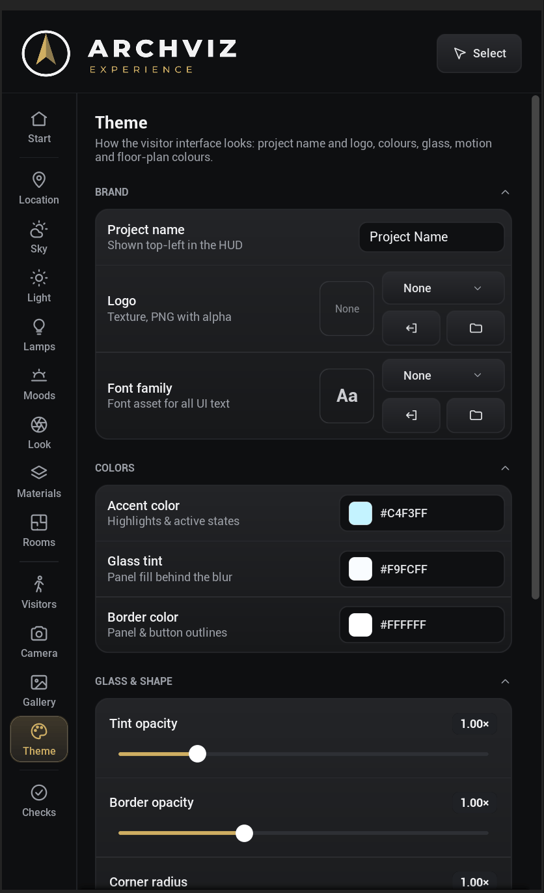
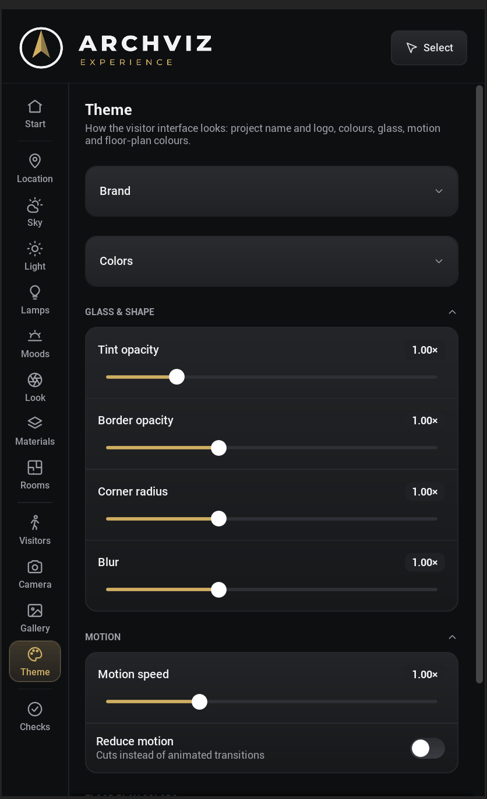
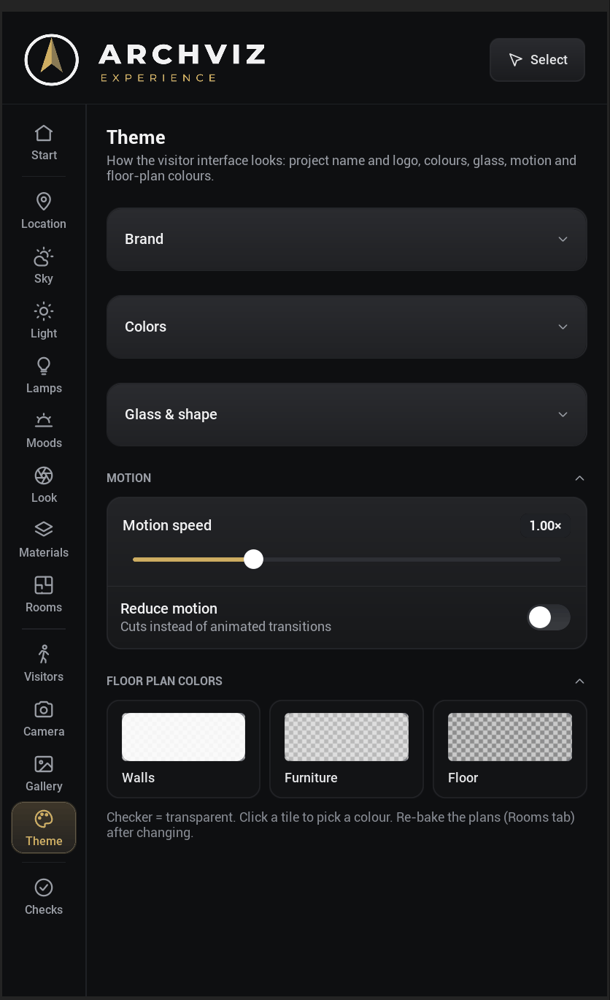
Start-up
What visitors see before and after a visit: splash screen, intro video, a menu to choose the development and its décor style, and an end screen with your agent's contact. These settings are shared by the whole project (every level), not stored in one level.
Splash screen
Logo (a PNG texture with alpha), Title (shown under the logo, or alone without one) and how long it stays (Duration; 0 skips it). ArchViz Experience logo: Off, as the main logo, or small at the bottom under yours. Any key, click or tap skips it.
Intro video
Video file… picks an MP4 that plays after the splash, letterboxed on black. It's copied into Content/Movies so packaged builds include it. With Skippable on, a Skip button, any key or a tap goes straight to the menu.
Sites
Each site is a card in the menu: Name, Description (address, number of homes…), Image (also the menu background while the card is in focus) and the Level visitors walk through. Add, reorder and remove sites; expand one to edit it.
Styles lists the décor styles visitors can choose for that site. Save styles on the Materials tab (Save current look as style), then press Add this level's styles. With two or more styles the menu asks “Choose a style”; with one, the visit opens in it straight away.
Front end
Create front-end level makes the menu level and sets it as the project's start level, so packaged builds open on the splash and menu. Open front-end level opens it; press Play there to try the whole flow.
Return to menu when idle is for kiosks: after this many seconds without any input, a visit goes back to the menu (0 = never). It waits while a video is recording. The end screen and the style choice also go back to the site menu after the same time.
Agent contact
Name, Phone and Email shown on the end screen. Fill in at least one to turn the end screen on; empty lines are left out.
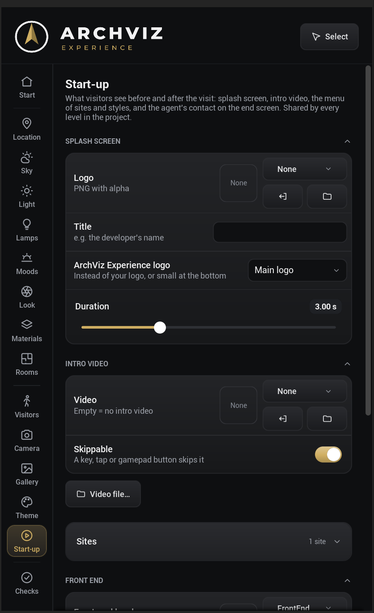
How the flow works
- Splash, then the intro video (each only if set).
- Choose a development: the site cards. Mouse, touch, arrow keys or the D-pad move between them; click, tap, Enter or A opens one.
- Choose a style, when the site has more than one. Back, Esc, Backspace or B returns to the sites.
- The visit opens in the chosen style. Its Quit card offers No, Main menu (straight back to the menu, without the splash or intro) and Yes, quit.
- End screen: Yes, quit (or Quit in the menu) shows “Thank you for visiting” with the site and your agent's contact, My selections (the finishes chosen in the visit, with Save) and Back to menu or Exit. Esc or B goes back to the menu. Without agent contact, Quit closes the app straight away.
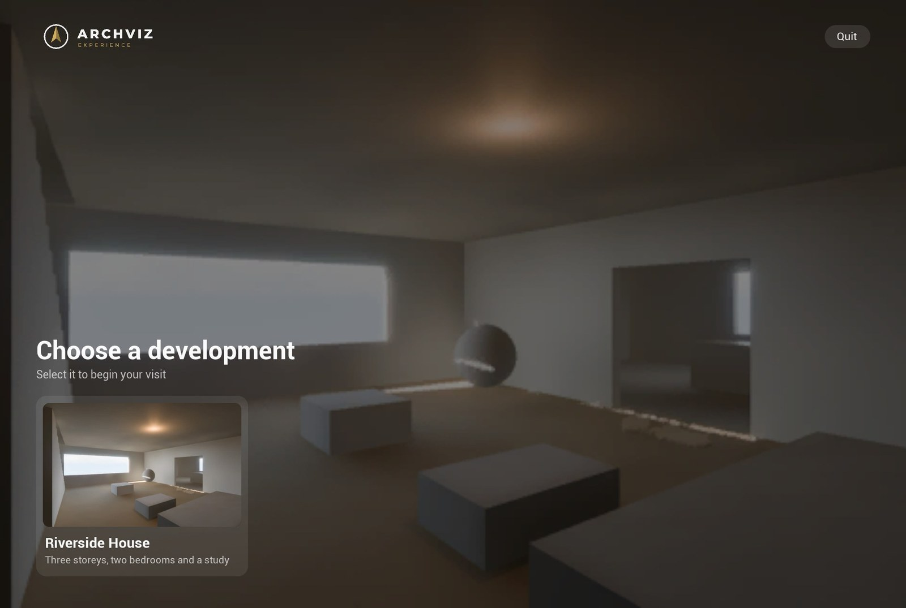
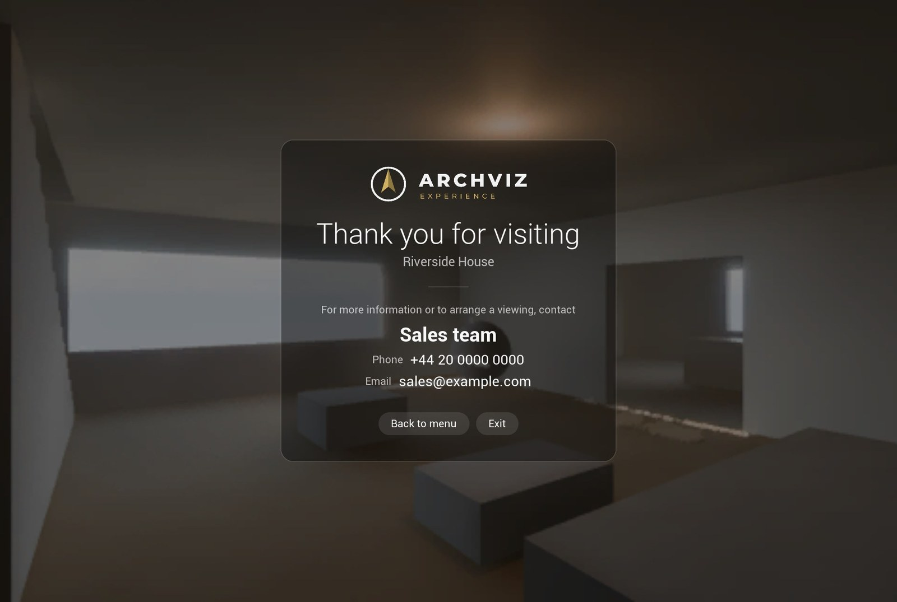
Open the front-end level and press Play. From a visit, type open FrontEnd?End=Main in the Cmd box to jump to the end screen (use your level's name after End=), or open FrontEnd?Menu for the menu.
Checks
Problems that would stop the experience working, with a fix for each. Aim for none before you package.
Checks re-run whenever the level changes. Colours show how serious each one is:
- Red: broken, for example no Experience in the level, or Play not using ArchViz Game Mode.
- Orange: likely wrong, for example a Static interior light, waypoints sharing a Room Id, or a second sun.
- Blue: worth knowing, for example Orbit framing the whole site because there are no orbit points.
Package checks: a style offered for this level but saved from another one, and a style listing surfaces that are no longer in the level (Remove missing).
Dollhouse checks: the dollhouse is on but there are no floor-plan volumes, a storey whose cut hides nothing (is the top of its box just under the next floor?), an actor on both of a storey's lists, and lists naming deleted actors (Remove missing).
Sun study checks: the sun study is on but the Lighting drawer is off (Turn Lighting on), the sun path is on but Orbit is off (Turn Orbit on), sun hours without any room waypoints, an HDRI sky (its sun doesn't follow the date), and the site still being the default city.
Options checks: a group with fewer than two options, a ticked option that doesn't exist (Start on the first), an option without a name, an actor in two options of the same group, and options pointing at deleted actors (Remove missing).
The start-up checks (front end, sites, end screen) cover the whole project and show in every level, including the front-end level itself: a missing front-end level, packaged builds not starting on the front end (Start on front end fixes it), a site without a level or picture, styles that no longer exist, and no agent contact.
Most checks have a fix button (Use ArchViz, Make Movable, Delete, Fix limits, Add floor plan...). Every fix can be undone with Ctrl + Z.
See Troubleshooting for the full list.
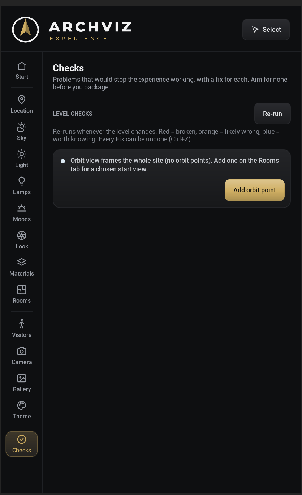
What visitors can do
Visitors get a glass interface: the project name at the top left and a dock at the bottom. Clicking the active mode again returns to Explore.
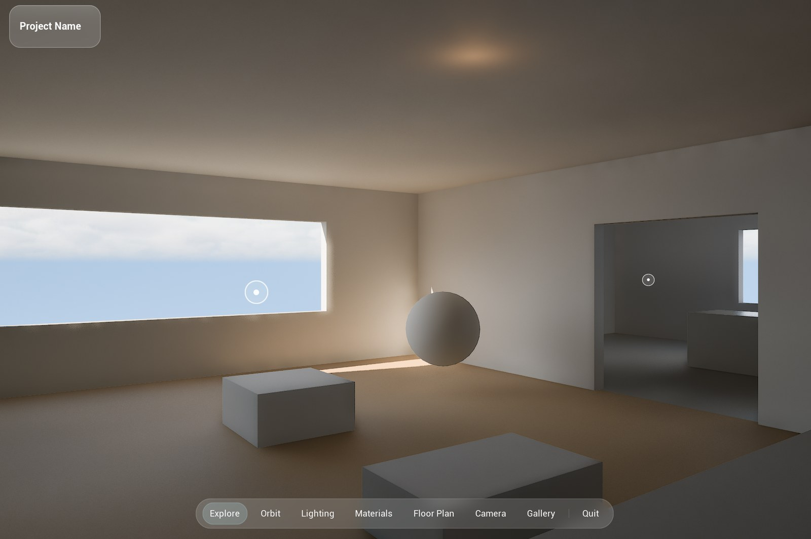
Explore
First-person walking at standing eye height. Click a waypoint marker to move to that room.
Devices. A round play icon floats above a radio, speaker or fan when you are near it: click or tap it (gamepad: aim at it and press A) to switch it on; it shows pause while it plays. Music gets quieter as you walk away and is muffled from other rooms.
Info points
Round “i” markers on things worth knowing about; hovering shows the title. Click or tap one (gamepad: aim the centre point at it and press A) to open its card: pictures (arrows, ← → or the D-pad), the title and text, and a link button when there is one. Close, Esc, B or a click beside the card closes it.
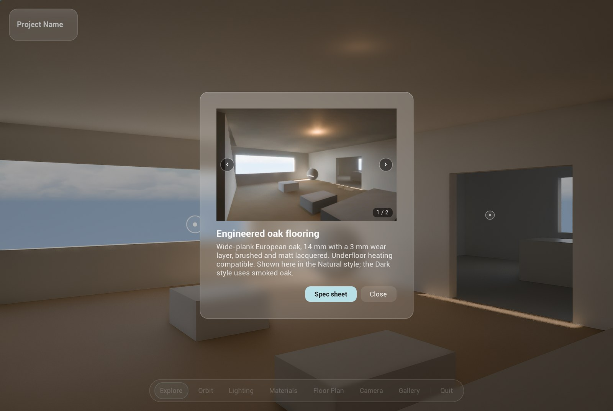
Orbit
The view flies out and circles the building or the chosen orbit point, always looking at it and kept clear of walls and the ground. The bar at the top switches between orbit points (the view glides smoothly from one to the next, rising over the building on the way) and has Back inside, which flies back to where the visitor was standing. Left alone for a few seconds, the view turns slowly like a turntable (if the point allows it). Camera mode works in Orbit too.
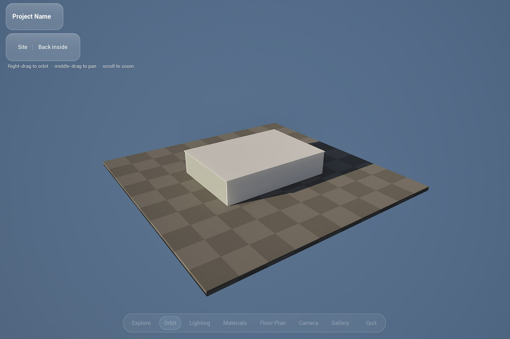
Cut open (the dollhouse): the row under the orbit bar has Off and a button per storey. Choosing a storey hides everything above it and its ceilings, and the view glides to look down into its rooms from a high angle (turning, zooming and the turntable keep working; the orbit points hide meanwhile). Each room has a label such as “Kitchen · 60.9 m²”: click or tap it and the view flies down into that room, back in Explore. Off glides back to the orbit point with the building whole; Back inside also puts it back. With a gamepad, the D-pad steps through the storeys and A on a room label goes there.
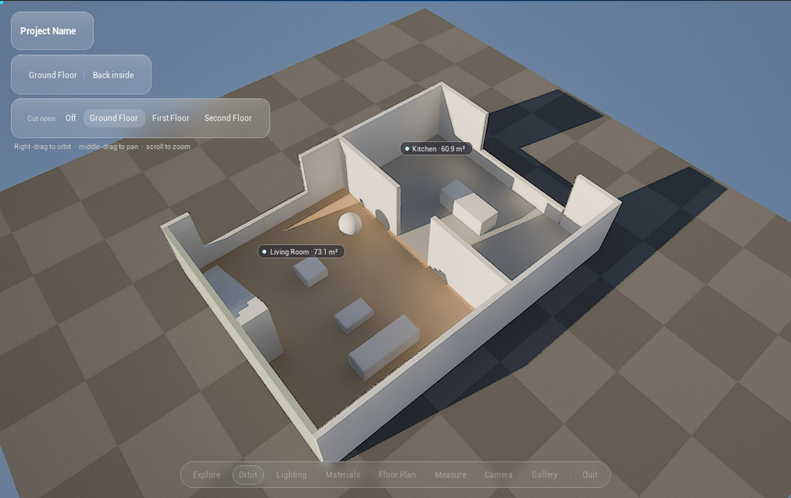
Sun path: with the sun study on, Orbit shows the sun's path over the building for the chosen date: an arc from sunrise to sunset with a dot every hour (labelled every three), a ring on the ground with north marked, and the sun now with a line down to the building. Sun path on the orbit bar shows or hides it (it's on, highlighted, by default). It hides while a storey is cut open.
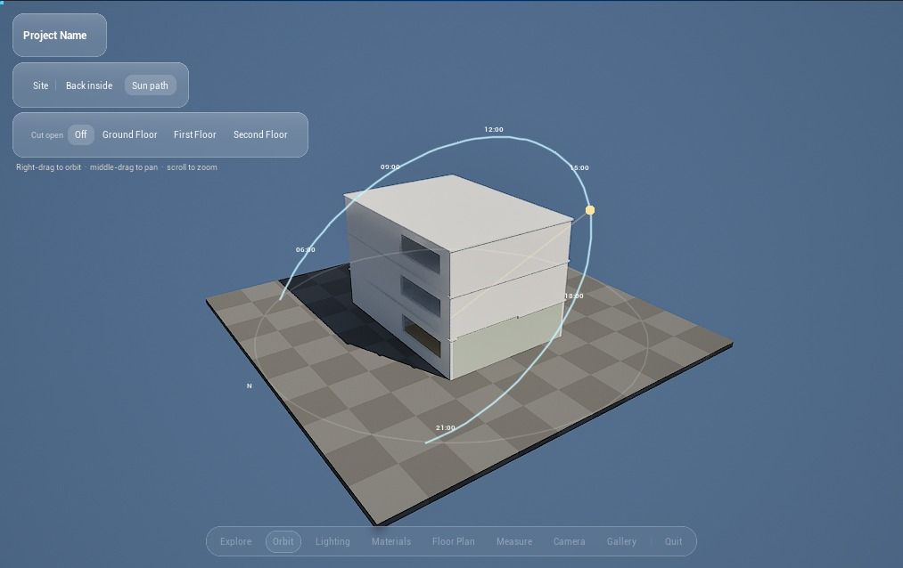
Lighting
A drawer with the moods as tiles, a time-of-day slider with sunrise and sunset, the interior light level and warmth, the weather buttons (Clear, Partly cloudy, Overcast), and under Rain & snow the Dry, Rain and Snow buttons plus Sound on / Sound off to mute the ambience. Tapping a mood sweeps the time smoothly to it.
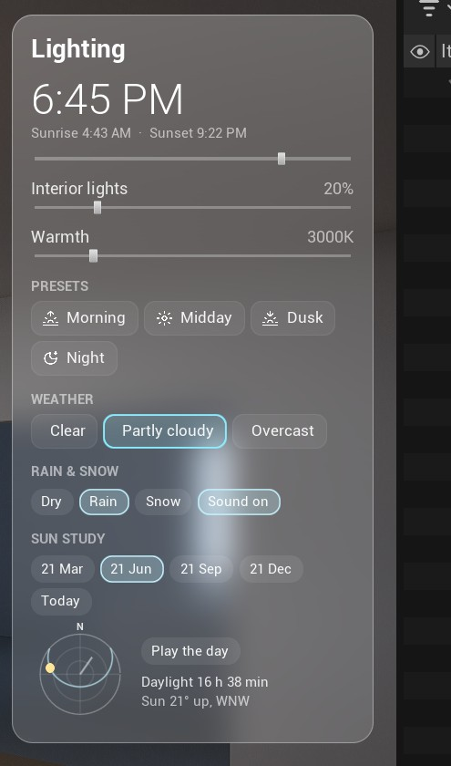
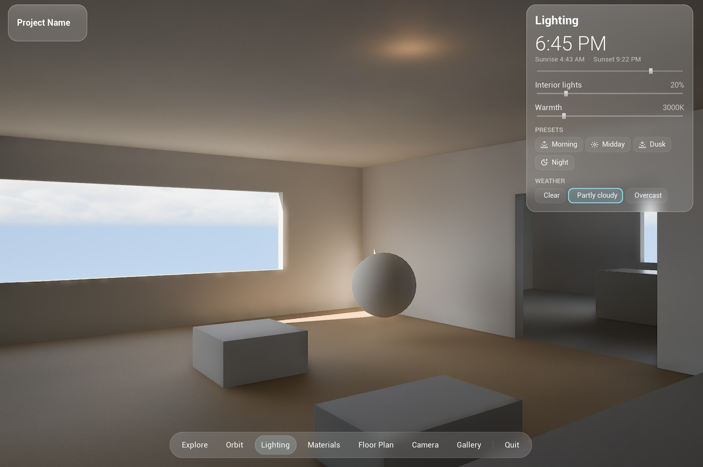
Sun study (at the end of the drawer): pick a date, 21 Mar, 21 Jun, 21 Sep, 21 Dec (equinoxes and solstices) or Today, and the sun moves to where it is on that day at the same time. Play the day runs from sunrise to sunset in about 20 seconds, the shadows sweeping through the rooms; Pause stops it and Play carries on from there. Moving the time slider or tapping a mood stops it too. A compass plots the day's path across the sky with the sun now and the way the visitor is facing, under the day length (“Daylight 16 h 38 min”) and where the sun is (“Sun 52° up, S”). With Reduce motion, Play steps an hour at a time.
Room labels on the floor plan and in the dollhouse add the hours of direct sun each room gets on the chosen date, e.g. “Kitchen · 18.4 m² · 5.5 h sun” (or “no direct sun”). They're measured from each room's waypoint across the room, every quarter of an hour, a few seconds after the visit starts and again when the date changes.
At night the sky shows the real stars for the site and date (see Night sky), best seen outside looking up.
Materials
At the top of the drawer, Packages shows the site's décor styles: tap one to restyle every room at once (finishes and furniture). The active package has an accent ring; a style chosen in the front-end menu is already active. Then click a customisable surface: it's outlined and the drawer shows its finishes. Click a swatch to apply it. After changing a surface the package reads “…, customised” with Reset to package, which puts every surface back.
Under the packages, Options has a row of buttons for each options group, e.g. Furniture: Furnished | Unfurnished. The chosen option has an accent ring. Tapping another fades the view to black for a moment, swaps the furniture or layout, and fades back (a straight cut with Reduce motion). If the active package saved a different option, it reads “…, customised” and Reset to package puts the package's options back too.
My selections (bottom of the drawer) lists the package, the finish on every surface and the chosen option in each group (e.g. Furniture: Unfurnished), and the agent's contact. Save writes a picture (PNG) and a web page (HTML, with a thumbnail per finish) to the output folder (the Camera mode folder); Show in folder opens it. The same list is offered on the front end's end screen after a visit.
Floor plan
The plan of the current storey, showing where the visitor is: a dot with a soft cone pointing the way they face. Floor Plan works as a switch while exploring: press it and the plan stays on screen as the visitor walks around (the button's label lights up), press it again to close it. Opening any other mode or Orbit closes it, and so does Esc / B; pressing Floor Plan from another mode returns to Explore with the plan open.
Each room's label shows its name, with its area (and hours of sun, when the sun study is on) on a smaller line underneath; labels near the edge shift to stay inside the plan. Under the title is the storey's floor area and the whole home's. Click a room to move there (the plan stays open); switch storeys with the arrows, and the plan follows the visitor up and down the stairs.
Measure
A tape measure. Click two points on any surface (tap, tap; gamepad: aim and press A twice) to draw a line with its length, in metres or feet and inches (Units on the Rooms tab). While placing the second point a dashed line follows the cursor with the live length. Points snap to edges and corners (where walls, floors and worktops meet), to earlier end points, and the second point to vertical or level when close; a small label shows what it snapped to. Measurements stay on screen: Undo removes the last one, Clear removes all, Done returns to Explore. Esc / B first cancels a half-placed point.
Camera
A full-screen camera: pick a lens from the drawer, set the focal length on the left slider (4 to 180 mm), switch autofocus or manual focus, change aperture and exposure, show a grid, choose the framing, then take a still or record a video. H hides the controls for a clean view; R starts and stops recording. The Folder button chooses where files are saved and Show in folder opens it after a save.
Gallery
Browse images, videos and cinematics one by one or as a grid, with titles and captions. Videos have play, pause and a scrub bar. Full screen hides the dock, and the controls fade when the mouse rests.
Quit
Asks “Quit the experience?” with No and Yes. Esc means No. With a front end it asks “Leave the visit?” and adds Main menu; Yes, quit then shows the end screen with your agent's contact.
Controls (?)
The ? button at the end of the dock opens the Controls card: a picture of the keyboard and mouse, a touchscreen or a gamepad with the controls the experience uses lit in your accent colour and numbered, and what each one does. Tabs switch between the three; it opens on the device the visitor is using. It also opens by itself on the first visit on a computer (switch on the Visitors tab). Got it, Esc or B closes it.
Desktop, touch and gamepad
The experience works with a mouse and keyboard, a touchscreen or a gamepad. Choose the main one at setup; with Switch to the device in use on, it follows whatever the visitor picks up. Visitors can see these controls any time with the dock's ? button.
- Desktop: a PC or laptop with a mouse. The mouse cursor is shown.
- Touch: Windows touchscreens and kiosks, and tablets (iPad, Android) through Unreal's Pixel Streaming, which streams the full-quality PC render to the tablet's browser and sends the touches back. A walking stick appears bottom-left; the dock, orbit bar and quit card get bigger for fingers.
- Gamepad: an Xbox or PlayStation style controller. A small aim point appears in the centre of the screen; drawers can be driven with the D-pad.
Desktop
| Input | Explore | Orbit |
|---|---|---|
| W A S D / arrow keys | Walk | A D turn around the point, W S closer / further |
| Right mouse button | Hold to look around | Drag to orbit |
| Middle mouse button | Drag to pan | |
| Mouse wheel | Closer / further (in Camera mode: zoom the lens) | |
| Left mouse button | Click markers, surfaces and buttons | Click buttons |
| O | Toggle Orbit view | |
| Esc | Back: closes the open card, drawer, mode or the floor plan | |
| H | Camera mode: clean view (hide the controls) | |
| R | Camera mode: start / stop recording | |
| ← → | Gallery: previous / next item | |
Touch
| Gesture | What it does |
|---|---|
| Walking stick (bottom-left) | Walk; in Orbit, turn around the point and move closer / further |
| Drag one finger | Look around (the scene moves with your finger); in Orbit, orbit |
| Tap | Markers, rooms on the floor plan and buttons; a surface in Materials mode; the focus point in Camera mode |
| Pinch | Camera mode: zoom the lens. Orbit: closer / further |
| Drag two fingers | Orbit: pan |
| Swipe left / right | Gallery: next / previous item |
Gamepad
| Button | What it does |
|---|---|
| Left stick | Walk; in Orbit, turn around the point and move closer / further |
| Right stick | Look around; in Orbit, orbit |
| RT / LT | Camera mode: zoom the lens. Orbit: closer / further |
| A | Select what the centre aim point is on: the nearest waypoint marker, a surface in Materials mode, the focus point in Camera mode. In a drawer: press the highlighted control |
| B | Back: closes the open drawer or mode |
| LB / RB | Previous / next mode in the dock |
| D-pad | Move between the controls in a drawer; Gallery: previous / next item |
| Y | Toggle Orbit view |
| X | Camera mode: start / stop recording |
| View | Camera mode: clean view |
| Right stick press | Leave the drawer's controls and go back to aiming in the scene |
In Lighting and Materials (once a surface is picked), the drawer's first control is highlighted as it opens, ready for the D-pad and A. The quit card starts on No.
In Play, type ArchViz.InputMode touch or ArchViz.InputMode gamepad in the console to switch modes (typing on the keyboard switches back to Desktop when Switch to the device in use is on). ArchViz.MouseAsTouch 1 makes the mouse act as one finger, so the stick, dragging and tapping can be tried on a desktop; pinch and two-finger gestures need a real touchscreen.
In Play-in-Editor, Esc also ends the play session, as usual in Unreal.
Packaging
- Run Checks and fix everything red and orange.
- Game mode. Create experience in level sets ArchViz Game Mode as the level's game mode (World Settings). To use it everywhere, set it in Project Settings › Maps & Modes › Default GameMode instead.
- Maps to package. With a front end, the front-end level, every site's level, its styles and pictures and the intro video are packaged automatically. Without one, add your experience level to Project Settings › Packaging › List of maps to include (or make it the Game Default Map).
- Videos. Videos added with Video file… are copied into Content/Movies, which Unreal always packages. If you add media sources yourself, keep their files in Content/Movies too.
- Package with Platforms › Windows › Package Project. With the plugin installed in the engine this works in Blueprint-only projects too.
Video recording (H.264 MP4) is built in for Windows. Stills render with Movie Render Queue, which the plugin enables; take a test still in your packaged build before handing it over.
Console commands
Type these in the console: ` in a development build of the experience, or the editor's Cmd box during Play. Shipping builds have no console.
| Command | What it does |
|---|---|
| ArchViz.Orbit | Orbit view: on, off, toggle, next, prev or an orbit point index. |
| ArchViz.Dollhouse | Cut open: lists the storeys without arguments; <storey number or name> cuts it open (flying out to Orbit if needed), off closes it; room lists the open storey's rooms and room <name or number> flies into one. |
| ArchViz.SunStudy | Sun study: logs the date and the sun without arguments; mar, jun, sep, dec, today or <month> <day> sets the date; play [seconds], stop; time <hours>; path on|off shows or hides the Orbit sun path. |
| ArchViz.Weather | Weather: logs the sky, rain / snow and the surfaces without arguments; clear, partly, overcast set the sky; rain [0..1], snow [0..1], none set the precipitation and its intensity. Add now to skip the blend (surfaces jump to fully wet / snowed). |
| ArchViz.Sound | Ambient sound: mute, unmute, volume <0..1>. Logs the level of each layer (day, night, wind, rain, rain indoors, room), how far indoors the visitor is and the room. |
| ArchViz.SunHours | Logs each room's hours of direct sun on the chosen date; refresh measures them again. |
| ArchViz.Gallery | Gallery mode: next, prev, grid, full or an item index. |
| ArchViz.Record | Starts / stops Camera mode video recording (H.264 MP4). |
| ArchViz.Still | Renders a still of the current Camera mode shot with Movie Render Queue. |
| ArchViz.OpenOutputFolder | Opens the folder Camera mode saves to (and logs its path). |
| ArchViz.InputMode | Switches the controls: desktop, touch or gamepad (logs the current mode without an argument). |
| ArchViz.Mode | Switches mode like the dock: walkthrough, lighting, materials, floorplan, measure, camera or gallery; add toggle to press it like a dock button (Floor Plan opens / closes). Logs the active mode and whether the floor plan is open. |
| ArchViz.Controls | Opens the Controls card; reset makes it show again on the next visit, as on a first visit. |
| ArchViz.MouseAsTouch | Testing: 1 = the mouse acts as one finger in the game view, 0 = normal. Not saved. |
| ArchViz.Info | Info points: lists them without an argument; <number> opens that point's card, next / prev switch its picture, close closes it. |
| ArchViz.Measure | Tape measure: x1 y1 x2 y2 (fractions of the view, e.g. 0.3 0.5 0.7 0.5) adds a measurement between those two screen points; undo / clear. |
| ArchViz.Option | Layout / furniture options: lists the groups and options without arguments (* = chosen); <group> <option> (names or numbers, e.g. Furniture Unfurnished) chooses one. |
| ArchViz.Materials | Materials mode: lists the customisable surfaces and their finishes without arguments (* = applied); <surface> selects one, <surface> <finish> applies a finish (names or numbers, e.g. Living Room Floor Walnut), exactly as a click in the drawer. Handy for kiosk scripts and Pixel Streaming. |
| ArchViz.Device | Lists the devices (radios, fans) without arguments; <number> [on|off|toggle] switches one, exactly as the play icon does. |
| ArchViz.MakeDevice | Editor: makes each selected actor a device, music or fan (the Devices tab buttons, for scripted set-up). |
| ArchViz.GenerateSwatchThumbnails | Editor: renders a picture for every swatch that has none; optionally only under a content path, e.g. /Game/MySwatches. |
| ArchViz.ApplyStyle | Applies a décor style by name, the same as tapping its package; lists the styles without an argument. |
| ArchViz.Selections | Opens My selections; save writes its PNG and HTML to the output folder straight away (and logs the path). |
| ArchViz.Quit | Opens the quit confirmation (same as the dock's Quit button). |
| ArchViz.StreamLevel | Loads and shows (1) or unloads (0) a sub-level by part of its name; lists the streaming levels without arguments. Handy for testing level overrides. |
| ArchViz.AddGalleryVideo | Editor: adds a video file to the gallery (copied into Content/Movies). |
Troubleshooting
Most problems show up on the Checks tab with a fix. The common ones are below. Anything else: email info@overbeckstudios.com with your Unreal Engine version, what you did and what you expected.
| Symptom | Cause and fix |
|---|---|
| Rain falls inside the house | The roof map needs real geometry overhead: roofs or ceilings that render in the level (not hidden in game). Glass roofs count as roofs. |
| No puddles or snow on a surface | Its material doesn't include the weather function (see Weather on materials), the Weather switch is off on its instance, or it's under a roof. Puddles also need a flat, upward-facing surface. |
| No glass interface or dock in Play | Play isn't using ArchViz Game Mode. Checks › Use ArchViz sets it for the level. |
| The level is lit twice / too bright | A separate sun, sky light, fog or atmosphere actor is in the level. The Experience has its own: delete the extra (Checks › Delete). |
| The dimmer does nothing | No interior lights are linked, or they're Static. Add them on the Lamps tab; Checks › Make Movable. |
| Exposure ignores the Look tab | A post-process volume with a higher priority overrides it. Checks › Set priority 0, or turn Apply exposure off. |
| A surface can't be restyled | It has no swatches and there are no fallback swatches. Add swatches on the Materials tab. |
| Clicking a surface does nothing in the visit | Its mesh has no collision for clicks. The Checks tab finds it; Make clickable turns on click-only collision (walking is unaffected). |
| A surface “changes nothing” | Its Parts no longer match the actor's materials (a renamed slot or re-imported mesh). Fix with Use all materials on the Checks tab, or pick the parts under Edit on the Materials tab. |
| A finish looks the same as another | The swatch sets parameters its material doesn't have (a typo, or a parameter-only swatch on a material without them). The Checks tab names the parameters; give the swatch its own Base Material, or fix the names. |
| Floor-plan markers missing or blank labels | A waypoint has no Room Id or Room Name, or two share a Room Id. Fill them in (Details panel). |
| A waypoint puts the visitor in the wrong place or outside | Something stands on its landing spot (the arrow on the floor), so the visitor is moved to the nearest free spot. The Checks tab names the actor; move the waypoint or the actor. |
| The Controls card doesn't open at the start | It opens once per computer. Switch it on the Visitors tab, or type ArchViz.Controls reset to see it again on the next visit. |
| Floor plan button shows nothing | No floor-plan volume. Rooms › Add floor plan, then Bake plan. |
| The Cut open row is missing in Orbit | There are no floor-plan volumes, or Dollhouse is off on the Visitors tab. Add one volume per storey on the Rooms tab. |
| A ceiling stays, or a storey's floor disappears, when cut open | Rooms › Dollhouse › Preview cut shows what's hidden. Adjust the storey's Ceiling band, or add the actor with Always hide / Never hide. Check that each box's top sits just under the next floor. |
| The sun study doesn't move the sun | An HDRI is the sky (its sun stays where the photo has it). Choose Physical sky on the Sky tab. |
| Sun hours look wrong, or a room shows no direct sun | They're measured from the room's waypoint across the room; move a waypoint that sits in a corner or a cupboard. Check the site and north (Location tab). |
| No stars at night | Stars are off on the Sky tab, an HDRI is the sky, or it's overcast. Give auto exposure a few seconds after jumping from day to night. |
| Orbit starts in the wrong place | An orbit point's start distance or angle is outside its limits. Checks › Fix limits. |
| A package changes some surfaces but not others | Surfaces were deleted or renamed since the style was saved, or the style comes from another level. Checks › Remove missing, or Materials › Update the style from the current look. |
| The Options row is missing from the Materials drawer | No group has two or more options. Add an option on the Materials tab (Options); Checks lists groups with only one. |
| A package doesn't change the furniture | The style was saved before the options existed, or a group or option was renamed since. Materials › Update the style with the options you want shown. |
| The packaged build skips the menu | The project's start level isn't the front end. Checks › Start on front end. |
| Quit closes the app without the end screen | No agent contact is set, or there's no front-end level. Fill in Start-up › Agent contact. |
| Light leaks into big rooms | Lumen's reach is too short for the space. Increase it under Look › Global illumination. |
What's new
v1.0
- First release on Fab.
- Materials set-up made easy: Make selected customisable (one surface per material), finishes created straight from your materials with rendered thumbnails, surfaces edited in place with a live preview, and material checks.
- Included demo level: a furnished three-storey home with every feature set up, and a guided tour that walks you through setting it up from scratch (Show me, self-ticking practice tasks, viewport callouts, progress remembered, minimise to one line, Reset demo).
- Devices: music players (spatial sound, playlists, your own audio files), fans with spinning blades and projectors / TVs that cast a video onto a wall as real light (MegaLights). Visitors switch them on with a floating play icon; ceiling-mounted devices show it underneath.
- Outdoor lights switch on at dusk and off at dawn by the sun, like a photocell; bulbs glow with interior and outdoor lights.
- Trees and seasons: the new foliage material turns and sheds leaves with the site's date and hemisphere, gets wet in rain and holds snow.
- More realistic snow: soft, thinner cover under trees, bare gaps along walls and around trunks and posts, patchy edges as it builds up.
- New master materials: M_ArchViz_Glass, M_ArchViz_Foliage, and a light-mask glow on M_ArchViz_SurfaceTextured.
v0.9.1 (beta)
- Floor plan works as a switch while exploring: it stays on screen as the visitor walks until Floor Plan is pressed again, and closes when another mode or Orbit opens. A soft cone from the visitor's dot shows which way they face.
- Tidier floor plan: the storey name has the header to itself with the areas on a line underneath; room labels put the area and sun hours on a second line and stay inside the plan.
- Controls card: the dock's new ? button shows the keyboard and mouse, touch and gamepad controls with pictures; it opens by itself on the first visit (switch on the Visitors tab).
- Waypoints never land the visitor inside furniture or walls (they move to the nearest free spot), and a new check names anything standing on a landing spot. Waypoints show a pin icon in the level.
- New console commands ArchViz.Mode and ArchViz.Controls.
v0.9.0 (beta)
- Rain and snow over any sky (with their own cloud deck, haze and dimmer sun), never falling indoors. Weather on materials: the M_ArchVizExterior master material and the MF_ArchVizWeather function give wet surfaces, puddles with rain ripples, splashes and snow cover that build up and dry or melt over time. New console command ArchViz.Weather.
- Ambient sound that follows the time of day, the weather and whether the visitor is indoors (birds, crickets, wind, rain, rain on the windows), plus an optional sound per room. New console command ArchViz.Sound.
- Now a self-contained plugin: copy it into any UE 5.8 project's Plugins folder. It sets its own renderer requirement and the level's game mode, and keeps your generated files in your project.
- The Experience actor stays at the world origin and shows only the North Point billboard.
- New check: Play not using ArchViz Game Mode, with a one-click fix.
- Packaged builds include the full visitor interface.
- Desktop, Touch and Gamepad input modes, chosen at setup and switching live to the device in use: a walking stick and gestures for touchscreens and tablets (Pixel Streaming), full controller support with a centre aim point and D-pad drawers, bigger tap targets and hints that match the device.
- Orbit view glides smoothly between orbit points (eased, lifted over the building) instead of snapping. New Orbit transition time on the Visitors tab (default 2.5 s) and a per-point Transition time; Reduce motion makes it a cut.
- Start-up flow (new Start-up tab): splash screen, intro video, a front-end menu to choose the development and its décor style, décor styles saved from the Materials tab, Main menu in the visit's Quit card, an end screen with the agent's contact, and idle return to the menu for kiosks. New start-up checks.
- Info points: clickable “i” markers with a card (pictures, title, text and an optional link), added on the Rooms tab, switched on the Visitors tab, with mouse, touch and gamepad support and checks.
- Room areas: Bake plan measures each room and storey; the floor plan shows “Kitchen · 18.4 m²” and storey / home totals, in metric or imperial, with your own figures as overrides.
- Tape measure: a Measure button in the dock; two clicks, taps or A presses give a line with its length, snapping to edges, corners, vertical and level; Undo, Clear and Done.
- Finish packages: the site's décor styles appear as Packages in the Materials drawer; one tap restyles every room, with “customised” and Reset to package after single-surface changes.
- My selections: the package and each surface's finish, from the Materials drawer and the end screen; Save writes a PNG and an HTML page to the output folder.
- Layout and furniture options: groups such as Furnished / Unfurnished set up on the Materials tab from actors in the level (with an editor preview and checks), switched by visitors in the Materials drawer with a quick fade, remembered by décor styles and listed in My selections.
- Dollhouse: Orbit's Cut open row cuts a storey open (upper floors, roof and ceilings hidden, worked out from the floor-plan volumes) and looks down into it; clickable room labels fly the visitor into a room. Editor preview, per-storey ceiling band and always / never hide lists on the Rooms tab, a Visitors-tab switch and checks.
- Sun study: dates (21 Mar / Jun / Sep / Dec, Today) and Play the day (sunrise to sunset in about 20 s) in the Lighting drawer, with a sky compass, day length and sun position; the sun's path arcing over the building in Orbit (Sun path button); hours of direct sun on the room labels. Visitors-tab switches and checks.
- Night sky: real stars and the Milky Way (NASA Deep Star Maps 2020) placed for the site, date and time, fading in through twilight and thinning under cloud, with a town glow on the horizon (Light pollution, Dark site to City centre). Stars switch, brightness and light pollution on the Sky tab.
This manual is updated with every release. Last updated 18 November 2026.
Credits
ArchViz Experience includes this third-party content (also listed in the plugin's CREDITS.txt):
- Night sky star map: Deep Star Maps 2020, NASA/Goddard Space Flight Center Scientific Visualization Studio. Star data from Gaia DR2 (ESA/Gaia/DPAC), Hipparcos-2, Tycho-2 and the Yale Bright Star catalogue. Public domain; svs.gsfc.nasa.gov/4851.
- Ambient sound (all CC0, from OpenGameArt; trimmed, looped and levelled): day birds and wind from “Park ambiences” by Thimras; night crickets from “Crickets Ambient Noise - loopable” by Wolfgang_ (Ted Kerr); rain from “AMB Rain Loop 2” by Kresiek; rain indoors from “Rain on Window Loop” by alxl.
- Default HDRI sky: “Kloofendal 48d Partly Cloudy (Pure Sky)” by Greg Zaal, Poly Haven. CC0.
- Demo level furniture, Poly Haven, CC0: “Mid Century Lounge Chair” by Kuutti Siitonen; “Modern Arm Chair 01” by Vibrant Nordic; “Modern Coffee Table 01” by Amin; “Dining Chair 02”, “Modern Ceiling Lamp 01” and “Potted Plant 04” by James Ray Cock; “Modern Wooden Cabinet” by Patrik Pangerl; “Drawer Cabinet” by Ulan Cabanilla; “Ottoman 01” by Caspian Fortune. Fabrics “Wool Boucle”, “Rough Linen” and “Jogging Melange” by colormass and Rico Cilliers. Ground: “Concrete Pavement 02” by Charlotte Baglioni. Trees: “Jacaranda Tree” and “Fir Tree 01” by Rob Tuytel and Rico Cilliers. Music: “Jazz at the park” by Manwithmetalpig and “Softly” by Loyalty Freak Music, Wikimedia Commons, CC0. Demo projector film: original footage of the demo level. Props: “Street Lamp 01” by Josh Dean; “Ceiling Fan” by Ulan Cabanilla; “Boombox” by Thomas Paul Mouilleron; “Filmstrip Projector 8mm” by PeterM.
- Wood textures (Oak and Walnut swatches), Poly Haven, CC0: “Oak Veneer 01” by Jenelle van Heerden; “Dark Wood” by Dimitrios Savva, Rico Cilliers and Dario Barresi (tinted toward walnut).